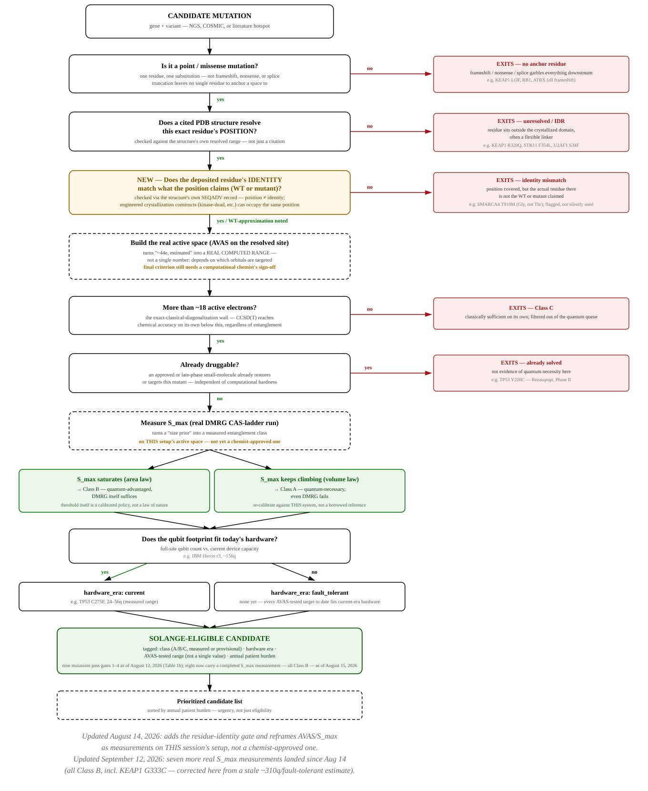
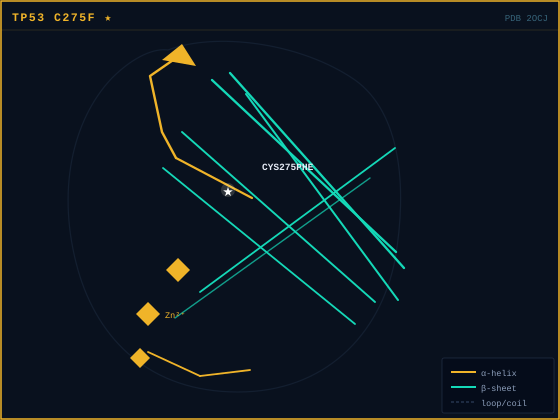
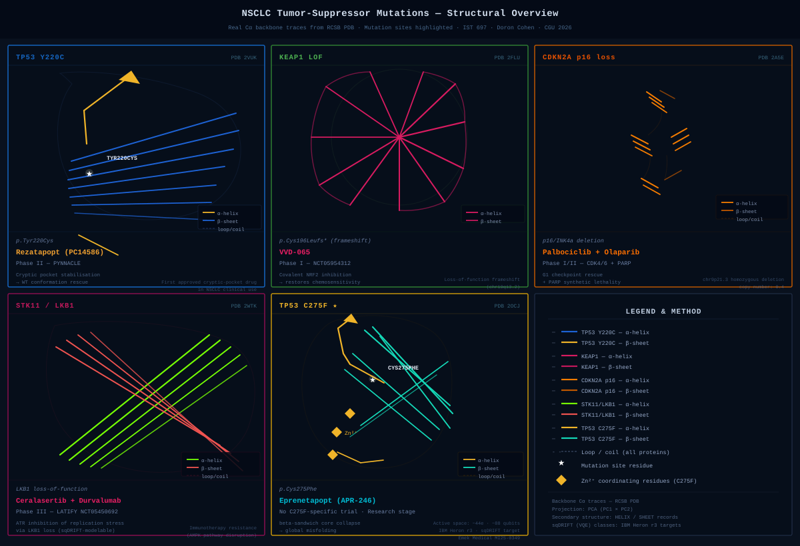
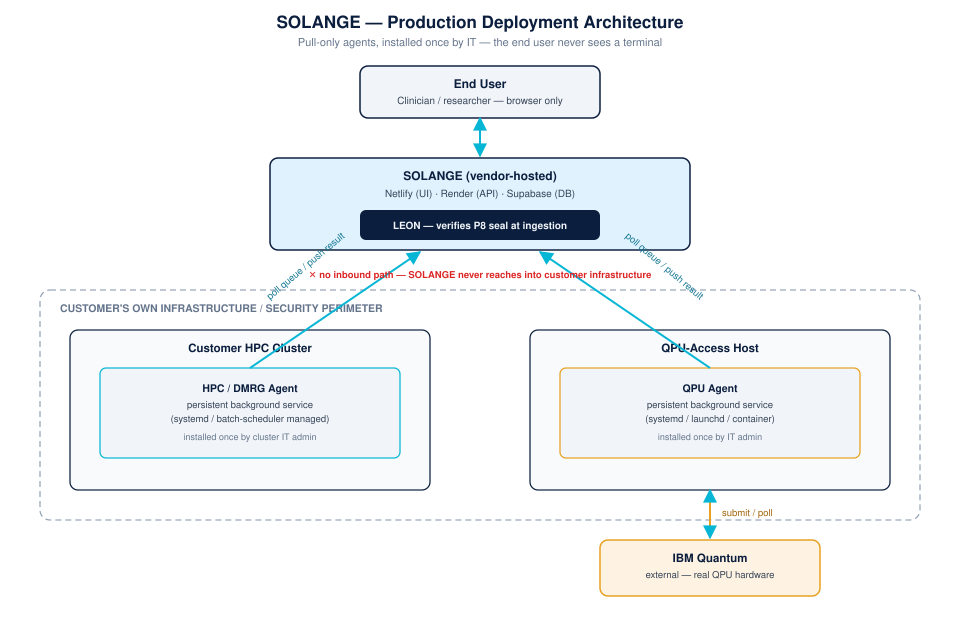

This platform bears her name: SOLANGE — the reason this dissertation exists.
The guardian of this work's integrity: LEON — re-verifying every result before it may be trusted. In their memory · לזכרם
Where Things Are.
A Reader's Guide.
A reader's guide to the eighteen terms that recur most often across this proposal.
This dissertation sits at the intersection of information systems, quantum computing, computational chemistry, and FDA regulatory science. Each of these fields contributes vocabulary that is unfamiliar to readers from the others. The eighteen terms below are the minimum set required to follow the argument from the Problem Statement through the Methodology section without consulting external references. A complete glossary of seventy-seven terms appears as Appendix A.
Terms are listed alphabetically. Where a term has both a formal definition and a specific role in this dissertation, the role is given priority — readers seeking deeper coverage are referred to Appendix A.
| Acronym | Full Name | Role in This Dissertation |
|---|---|---|
| BQP | Bounded-error Quantum Polynomial time | The complexity class of decision problems efficiently solvable on a quantum computer. The dissertation's first original contribution (§06.i) is a BQP-relevance classification framework arguing that the fermionic Hamiltonian eigenvalue problem at C275F's active-space boundary (18–48 measured electrons, criterion-dependent) admits a known BQP-class quantum algorithm while best-known classical methods fail at chemical accuracy. This is an operational BQP-relevance claim — conditioned on the current classical state of the art and on sufficient initial-state overlap — not a formal classical–quantum separation (ground-state finding is QMA-hard in general; see §1.2). |
| C275F | TP53 p.Cys275Phe | A non-druggable TP53 missense mutation in which Cys275 is replaced by Phe, disrupting the DNA-binding interface at the loop-sheet-helix region without creating an exploitable drug-binding cavity. Sourced from patient NGS report MI25-0349, C275F is the dissertation's primary demonstration case and the focal point of Phase 3A and 3B simulations. C275F is classified as a structural mutant: the Cys→Phe substitution destabilizes the hydrophobic core of the DNA-binding domain rather than directly abolishing a DNA-phosphate contact. No crystallographic structure of C275F exists in PDB, consistent with the conformational heterogeneity expected from a structural mutation. |
| CDKN2A | Cyclin-Dependent Kinase Inhibitor 2A | A tumor-suppressor gene that appeared alongside TP53, KEAP1, and STK11 in the patient NGS report that motivated this project, but its demonstrated finding is a homozygous deletion (copy number ~0.4), not a point substitution — a deletion has no single mutant residue for an active space to be built around, the same failure mode as a frameshift. CDKN2A does not currently pass the platform's structural-eligibility criteria (§01, Table 1b); the platform's actual verified targets are the nine point mutations recorded there, concentrated in TP53, KEAP1, and STK11. |
| DSR | Design Science Research | The methodological framework anchoring this dissertation, after Hevner et al. (2004). DSR positions the work as the design and evaluation of an artifact (the platform) rather than as hypothesis-testing science. Phase 4 implements DSR-prescribed expert evaluation (n=4–6 panel, OSF pre-registered) against four criteria: utility, novelty, rigor, feasibility. |
| FDA | U.S. Food and Drug Administration | The federal agency regulating pharmaceuticals and clinical research in the United States. The dissertation's Layer 5 contribution operates within FDA's 21 CFR Part 11 framework — designing audit-trail architecture for probabilistic quantum simulation outputs. |
| HPC | High-Performance Computing | Large-scale classical computing infrastructure (CPU/GPU clusters). The third pillar of the QC·AI·HPC architecture: HPC handles classical pre-processing (DFT, DMRG) and post-processing (AI rescoring) that surrounds the quantum kernel. |
| KEAP1 | Kelch-like ECH-Associated Protein 1 | Contributes one structurally-verified target mutation, G333C: coordinate-verified from PDB structures 1U6D and 2FLU (residues 322–609), classified Class B (quantum-advantaged), full active site ~155 active electrons (~310 qubits under Jordan-Wigner encoding) — well beyond the exact-classical wall (~18e), designated fault-tolerant QPU target (~2030+). Two related candidates were checked against the same structures and excluded (§01, Table 1b): R320Q, whose residue sits two positions before the Kelch domain's resolved boundary in a documented flexible linker, and the generic LOF finding (a frameshift, p.Cys196Leufs*), which has no single residue to anchor a computation to at all. Only G333C is coordinate-verified. |
| NGS | Next-Generation Sequencing | High-throughput DNA sequencing technology used to identify mutations in patient tumors. The dissertation's anchor patient case (MI25-0349, Emek Medical Center, June 2025) is sourced from NGS data: TP53 p.Cys275Phe identified as a Tier I pathogenic variant at 12.66% allele frequency. |
| NSCLC | Non-Small Cell Lung Cancer | The most common form of lung cancer (~85% of cases) and the leading cause of cancer mortality globally (~2.1 million new cases and ~1.53 million deaths annually; GLOBOCAN 2022). The clinical context of the dissertation: the four target mutations (TP53, KEAP1, CDKN2A, STK11) are common non-druggable drivers in NSCLC patients. |
| P1–P9 | Provenance fields 1 through 9 of the audit-trail schema | The dissertation's signature contribution to Information Systems: a nine-field provenance record that makes probabilistic quantum simulation outputs auditable under FDA 21 CFR Part 11. Fields cover circuit fingerprint (P1), compilation lineage (P2), device identifier and calibration epoch (P3), per-gate error budget (P4), shot count and raw outcome distribution (P5), error-mitigation lineage (P6), statistical estimator and confidence interval (P7), cryptographic seal (P8), and ML-decoder provenance (P9). Each field maps to a specific 21 CFR §11.10 requirement. |
| Part 11 | 21 CFR Part 11 (FDA Electronic Records & Signatures) | The federal regulation governing electronic records and signatures in FDA-regulated contexts. The dissertation's Layer 5 / §06.iii contribution: the first systematic framework applying Part 11 to probabilistic quantum-computed binding data. Part 11 (records) is in scope; Part 312 (IND submission) is explicitly out of scope. |
| QC | Quantum Computing | Computation exploiting quantum-mechanical phenomena (superposition, entanglement) to solve problems intractable for classical hardware. The first pillar of the QC·AI·HPC architecture; Layer 1 of the platform houses the quantum kernel (SqDRIFT on IBM Heron r3). |
| QM/MM | Quantum Mechanics / Molecular Mechanics hybrid partitioning | A multi-scale modeling approach in which a small chemically critical region is treated quantum-mechanically while the surrounding environment is treated classically. The dissertation requires a novel QM/MM scheme tailored to TP53's Zn²⁺ site for C275F — itself a research contribution within the broader pipeline. |
| QPU | Quantum Processing Unit | The hardware unit performing quantum computation, analogous to a CPU or GPU. IBM Heron r3 is the QPU targeted in Phase 3B. NVQLink provides the GPU↔QPU interconnect that the orchestration platform builds upon. |
| SqDRIFT | Sample-based quantum Diagonalization with stochastic Trotter (qDRIFT) | The quantum algorithm anchoring Layer 1 of the dissertation. Demonstrated by IBM in 2026 (IBM Research; arXiv:2603.08696 and the SqDRIFT method paper arXiv:2508.02578): a 32-electron active space of C₁₃Cl₂ on 100 qubits of Heron, beyond the classical CASSCF ceiling of ~18 electrons. SqDRIFT inherits qDRIFT's provable convergence bounds — a property the dissertation leverages for the metal-coordinating cluster of the active space. |
| STK11 | Serine/Threonine Kinase 11 (also LKB1) | Contributes one structurally-verified target mutation, D194N: coordinate-verified from PDB 2WTK (residues 43–347), classified Class A (quantum-necessary), full active site ~152 active electrons (~304 qubits under Jordan-Wigner encoding) — designated fault-tolerant QPU target (~2030+). F354L was checked against the same structure and excluded (§01, Table 1b): residue 354 sits outside 2WTK's resolved kinase domain entirely, in a C-terminal region with no identifiable folded domain. An earlier citation for this row (PDB 2QK7) was a straightforward error — 2QK7 is an unrelated bacterial toxin, not an LKB1 structure — and a proposed AlphaFold-based fallback (UniProt Q15831) was not independently confirmed to resolve the site either. D194N is the gene's only verified point mutation. |
| TP53 | Tumor Protein 53 (the p53 tumor suppressor gene) | The most frequently mutated gene in human cancers (~59% of solid tumors). The dissertation focuses on TP53 structural mutants disrupting the DNA-contact interface — particularly C275F — that disrupt DNA-contact geometry without creating druggable pockets. TP53's Zn²⁺ tetrahedral coordination site (Cys176/His179/Cys238/Cys242) requires ~22–28 active electrons, the paradigmatic case for SqDRIFT-grade simulation. |
| VQE | Variational Quantum Eigensolver | A hybrid quantum-classical algorithm that uses a classical optimizer to minimize the expectation value of a quantum-prepared trial state. Phase 3A benchmarks VQE outputs against DFT and CCSD(T) reference values on the C275F local active site. The poster's results illustration shows VQE-SqDRIFT at −11.7 kcal/mol with 0.5 kcal/mol error — within chemical accuracy. |
See also: Appendix A — Complete Glossary (seventy-seven entries) for full coverage of acronyms, methods, and technical terms appearing throughout the dissertation, prototype, and supporting artifacts.
The Problem, Stated Precisely.
Approximately 60% of non-small cell lung cancer (NSCLC) patients harbor mutations for which no approved targeted therapy exists. Among the most clinically significant are structural TP53 DNA-interface mutants — particularly p.Cys275Phe (C275F) — which disrupt the DNA-binding interface in ways that are intractable to classical computational drug discovery methods at the accuracy required for reliable candidate ranking. The fermionic Hamiltonian eigenvalue problem at the C275F active-space boundary belongs to a family of problems for which quantum simulation algorithms (Abrams & Lloyd, 1999; Aspuru-Guzik et al., 2005) provide efficient solutions given an adequate initial state, placing it within BQP under the standard complexity-theoretic framing of quantum chemistry. This is an operational BQP-relevance claim, not a formal separation: ground-state finding is QMA-hard in the general case, and BQP containment is conditional on sufficient initial-state overlap (§1.2). Under that framing the dual operational condition holds that (i) the best known classical methods do not achieve the required accuracy at this scale within tractable resources, and (ii) the problem admits a known BQP-class algorithmic solution in the selected operational regime.
This dissertation proposes, designs, implements, and evaluates an orchestration platform — hardware-agnostic at the workflow level; vendor-specific at the compilation and error-mitigation layer — that integrates quantum computing, high-performance classical computing, and artificial intelligence into a unified, reproducible, and FDA 21 CFR Part 11-compliant workflow for simulating non-druggable NSCLC tumor suppressor mutation targets. The primary research artifact is a working prototype platform grounded in real patient NGS data, validated through proof-of-concept execution on a quantum simulator backend.
Three original IT contributions are claimed: a BQP-relevant classification framework for non-druggable NSCLC targets, a Part-11-governed QC·AI·HPC orchestration architecture for oncology mutation simulation, and the first compliance framework (as of June 2026) applying FDA 21 CFR Part 11 to probabilistic quantum-computed molecular binding data — including ML-decoder provenance (P9) for emerging Ising-class learned QEC. The contribution of this dissertation is the architecture — the system that makes quantum simulation of non-druggable tumor suppressor mutations accessible, reproducible, and governed. Full-scale execution on IBM Heron r3 quantum hardware is identified as a subsequent research phase, enabled by the architecture designed here.
Current targeted therapies, even where they exist, confront an additional structural barrier: de novo resistance. For the majority of NSCLC patients in the non-druggable class represented by Table 2, no first-line targeted agent has ever been identified — and therefore no resistance trajectory has even begun. HIV provides the closest historical analogue at scale: a uniformly fatal disease with no therapeutic entry point, transformed by computational structural biology and iterative molecular simulation into a manageable chronic condition. The transformation did not happen because a single drug was found — it happened because the information systems infrastructure for drug-discovery iteration was built: governed, reproducible, and grounded in molecular simulation. This dissertation proposes quantum simulation as the foundational computational step toward an analogous transformation for non-druggable NSCLC tumor-suppressor mutations — not as a therapeutic claim, but as the information systems architecture that makes iterative computational drug discovery possible for the first time in this class.
Three Gaps, One System.
1.1 · The Clinical Gap
NSCLC is the leading cause of cancer mortality globally, accounting for approximately 2.1 million new diagnoses per year and 1.53 million deaths annually (GLOBOCAN 2022). Approximately 70% of patients are diagnosed at advanced stage (locally advanced or metastatic), when curative resection is no longer possible. Median overall survival at advanced stage ranges from 8 to 14 months, and five-year survival is approximately 35% for locally advanced disease and 7% for metastatic disease — a figure itself inflated by the subset of patients who carry actionable driver mutations (EGFR, ALK, KRAS G12C) and benefit from approved targeted therapies. For the majority who do not carry actionable mutations, median survival and five-year rates are substantially lower. Advances in targeted therapy have transformed outcomes for patients with those actionable drivers — but they represent a minority. The majority of NSCLC patients carry mutations that current drug design approaches cannot address. They have no approved targeted therapy.
Table 1 — Pipeline-Eligible Non-druggable NSCLC Mutations
Nine rows across the tumor-suppressor genes below carry active-space electron/qubit estimates and are catalogued here as candidates satisfying the BQP-relevant classification criteria in principle: no approved targeted therapy, fermionic active space within quantum feasibility window, and no tractable classical solution at chemical accuracy. Candidacy is not the same as computability, and the two should not be conflated — a residue-level structural coverage audit following this table (see below), later extended across all eleven genes underlying Table 2's patient-burden estimate, found real problems (a bogus PDB citation, two residues sitting just outside their structure's resolved boundary) alongside real successes. The final, verified result is Table 1b: nine point mutations — five in TP53, one each in KEAP1 and STK11, plus SETD2 and (on structural grounds only, not NSCLC-relevant) ARID1A — that pass every gate, out of a much longer candidate list, including several rows below, that looked fine by citation alone. TP53 Y220C is separately excluded on druggability grounds regardless of structure. Table 1 below therefore records the field of candidates as originally catalogued; Table 1b records what survived direct verification.
| Gene | Mutation | Mutation Type | Protein Location | Active Electrons | Qubits (JW) | Primary Cancer Types | NSCLC Frequency | Key Data Sources |
|---|---|---|---|---|---|---|---|---|
| TP53 | C275F | Structural (hydrophobic core) | DNA-binding domain, loop-sheet-helix | ~18–48 | ~24–56 | NSCLC, breast, colorectal† | <1% (anchor case) | COSMIC, IARC TP53 DB, PDB 2OCJ |
| TP53 | R175H | Structural (global destabilization) | DNA-binding domain, β-sandwich core | ~12–96 | ~16–108 | NSCLC, ovarian, colorectal | ~3–4% | Joerger & Fersht (2007), TCGA |
| TP53 | G245S | Structural (L3 loop) | DNA-binding domain, L3 loop | ~40 | ~80 | NSCLC, head & neck | ~1–2% | IARC TP53 DB, COSMIC |
| TP53 | R249S | Structural (L3 loop) | DNA-binding domain, L3 loop | ~40 | ~80 | Hepatocellular, NSCLC | <1% | COSMIC, IARC TP53 DB |
| TP53 | R282W | Structural (H2 helix) | DNA-binding domain, H2 helix | ~42 | ~84 | NSCLC, breast | ~1% | Joerger & Fersht (2007), TCGA |
| KEAP1 | G333C | LOF (Kelch domain) | Kelch β-propeller, NRF2 interface | ~28 | ~56 | NSCLC (adenocarcinoma) | ~2–3% | TCGA, COSMIC, PDB 2FLU |
| KEAP1 | R320Q | LOF (Kelch domain) | Kelch β-propeller, NRF2 interface | ~28 | ~56 | NSCLC (adenocarcinoma) | ~1–2% | TCGA, COSMIC |
| CDKN2A | p16 LOF | LOF (deletion/inactivation) | CDK4/6 inhibitor interface | ~24 | ~48 | NSCLC, melanoma, pancreatic | ~15–20% | TCGA, PDB 2A5E; [62][63] |
| STK11 | F354L | Kinase domain LOF | C-terminal non-catalytic region (unresolved) | ~26 | ~52 | NSCLC (adenocarcinoma) | ~2–3% | TCGA, COSMIC — no PDB coverage; residue 354 falls outside 2WTK's resolved range (43-347), in LKB1's C-terminal region, which has no identifiable folded domain |
| STK11 | D194N | Kinase domain LOF | Kinase catalytic domain | ~26 | ~52 | NSCLC (adenocarcinoma) | ~1–2% | TCGA, COSMIC |
| NF1 | LOF | LOF (truncating) | GTPase-activating domain | ~30 | ~60 | NSCLC, glioma | ~5–7% | TCGA, COSMIC |
| RB1 | LOF | LOF (deletion/truncating) | Pocket domain (E2F interface) | ~32 | ~64 | NSCLC (SCLC), retinoblastoma† | ~3–5% | TCGA, COSMIC |
| SMARCA4 | LOF | LOF (ATPase domain) | SWI/SNF ATPase domain | ~28 | ~56 | NSCLC, ovarian, medulloblastoma | ~5–8% | TCGA, COSMIC |
| RBM10 | LOF | LOF (splicing regulator) | RNA-binding domain | ~22 | ~44 | NSCLC (adenocarcinoma) | ~5–7% | TCGA, COSMIC |
| ARID1A | LOF | LOF (chromatin remodeling) | ARID DNA-binding domain | ~24 | ~48 | NSCLC, endometrial, gastric† | ~4–6% | TCGA, COSMIC |
† Also observed in urological malignancies (urothelial carcinoma, renal cell carcinoma); SOLANGE pipeline directly applicable without architectural modification.
Structural coverage audit — a residue cited is not a residue resolved. Every row above names a mutation site and cites a PDB structure or a literature source; neither citation by itself establishes that the structure actually resolves the mutated residue, and this dissertation had not previously checked. Prompted by an external reviewer (M. Schmid) relaying a specialist's caution (A. Ray) that TP53-inactivating mutations are not all confined to well-resolved structural regions — some sit in intrinsically disordered regions (IDRs) invisible to X-ray or cryo-EM — every cited PDB entry in Table 1 was checked residue-by-residue against its actual resolved range. Two independent failures surfaced. KEAP1 R320Q: the Kelch domain's continuous backbone density begins at residue 322 in both cited structures (1U6D, 2FLU); R320 sits two residues before that boundary, inside a linker to the IVR domain independently documented in the literature as flexible and as the specific obstacle that has prevented a full-length Keap1 structure from being solved — not a marginal citation gap but a documented disordered region. STK11 F354L: the PDB code originally on record for this row, 2QK7, is not an LKB1 structure at all — it is a staphylococcal γ-hemolysin, an unrelated bacterial toxin. LKB1's actual solved structure (2WTK, Zeqiraj et al. 2009) resolves residues 43–347; F354 sits outside that range, in a C-terminal non-catalytic region the literature describes as having no identifiable folded domain. KEAP1 LOF (the generic loss-of-function row, corresponding to the platform's demonstrated NGS finding of a frameshift at residue 196) fails on two independent grounds: residue 196 sits in the IVR, before the Kelch domain entirely, and a frameshift has no defined single mutant residue for an active space to be built around in the first place — the model compound used for this row (methanethiol, borrowed from the unrelated point mutation G333C) is a proxy standing in for a proxy. CDKN2A's homozygous-deletion row is structurally inapplicable for the same reason as any deletion: there is no point residue to anchor an active space to. Three rows were independently re-verified as resolved and residue-accurate: TP53 C275F (2OCJ, residues 96–289; C275 sits centrally within that range — the active-electron count itself is a separate, still-open question addressed below, not part of this structural verification), KEAP1 G333C (1U6D/2FLU, residues 322–609; G333 sits well inside; local active site 104e/208q, full site 155e/310q), and STK11 D194N (2WTK, residues 43–347; D194 sits centrally within; local active site 76e/152q, full site 152e/304q). TP53 Y220C is separately excluded from the pipeline-eligible set on druggability grounds (§ below), leaving these three — one verified point mutation per core gene — as the only entries in this table with both a real structural anchor and a defensible non-druggable claim as of this writing.
Structural validity alone does not make a target reachable today. Of the three, TP53 C275F's footprint — 18–48e / 24–56q, a real AVAS-measured range on actual PDB coordinates, not a single fixed estimate — sits comfortably within the range this dissertation's own hardware-feasibility argument supports for current-generation devices, well under IBM's demonstrated 32e/100q execution (arXiv:2603.08696) at every point measured so far — the reasoning behind treating C275F as executable on IBM Heron r3 today (§ 05, Phase 3B). KEAP1 G333C exceeds that reach even at its reduced local site — 208 qubits is beyond Heron r3's own capacity (~156q), let alone the 310 qubits its full site requires. STK11 D194N's local site (152q) sits almost exactly at that same ceiling; whether it is reachable is a hardware-capacity question this dissertation cannot resolve in the abstract, but its hardware_era designation in this pipeline is fault-tolerant (~2030+), not near-term, because qubit count alone does not establish that a circuit of that depth is executable at usable fidelity on a NISQ-era device. The honest statement, then, is not "three validated targets" without qualification: it is one target executable now (C275F), and two structurally valid targets whose execution is a statement about the 2030s, not about this dissertation's present hardware access.
This audit is reported here rather than silently corrected because the failure mode it caught — a citation that looks authoritative but does not withstand a residue-level check — is exactly the kind of error the evidence-discipline principles of § 06 exist to prevent, and finding one in the dissertation's own reference table is a more convincing demonstration of that discipline than never having looked. The same check was subsequently extended past Table 1's original four genes to all eleven genes underlying Table 2's patient-burden estimate, asking of each: is there a real, recurrent point-mutation hotspot (not a truncating event with no single residue to anchor), does a structure resolve it, and is it still undruggable. Figure 1.2 states that question as the sequence of gates actually applied, before Table 1b reports which mutations pass all of them.

Table 1b — SOLANGE-Eligible Point Mutations, Extended Audit
Result of extending the residue-level structural check across all eleven Table-2 genes, not only the original four. NF1, RB1, RBM10, and ARID1A were also checked and found to have no qualifying candidate: NF1 and RBM10 mutations are spread across the gene with no recurrent residue; RB1's one missense candidate (I680T) is a single case-report finding, not a validated hotspot; ARID1A's real missense hotspot cluster (residues ~1000–1119, structurally resolved by PDB 1RyU) is documented in hepatocellular, cutaneous, uterine, and gastric carcinoma, not NSCLC — included below anyway as ARID1A R1020S, explicitly flagged non-NSCLC, because it passes every gate except tissue relevance. U2AF1 S34F/S34Y is a real, NSCLC-recurrent hotspot (~81%/~19% split of U2AF1 mutations in lung adenocarcinoma) that fails structurally: no human structure resolves residue 34, which sits in an N-terminal zinc finger outside the one solved U2AF1 fragment (1JMT, residues 43–146) — it is not listed below. CDKN2A, KEAP1 LOF, KEAP1 R320Q, STK11 F354L, ARID2 LOF, and (following direct RCSB verification, see the note after this table) SMARCA4 R1192C remain excluded per the findings above this table.
| # | Gene / Mutation | PDB | Active e⁻ / Qubits (full site) | Hardware Era | NSCLC-relevant | Status |
|---|---|---|---|---|---|---|
| 1 | TP53 C275F | 2OCJ | 18–48e / 24–56q | current | yes — anchor | VERIFIED (structural) |
| 2 | TP53 R175H | 2OCJ (WT) | 12–96e / 16–108q | current | yes | VERIFIED |
| 3 | TP53 G245S | 2J1Y | 40e / 80q | current | yes | VERIFIED |
| 4 | TP53 R249S | 2BIO | 40e / 80q | current | yes | VERIFIED |
| 5 | TP53 R282W | 2J21 | 42e / 84q | current | yes | VERIFIED |
| 6 | KEAP1 G333C | 1U6D | 155e / 310q | fault-tolerant | yes | VERIFIED |
| 7 | STK11 D194N | 2WTK | 152e / 304q | fault-tolerant | yes | VERIFIED |
| 8 | SETD2 R1625C | 5JJY | 30e / 60q | current | yes | VERIFIED — most frequently mutated epigenetic modifier in LUAD (~9%) |
| 9 | ARID1A R1020S | 1RYU | 28e / 56q | current | no — hepatocellular / cutaneous / uterine / gastric | VERIFIED, structure-only inclusion |
Rows 1–8 are structurally verified against the actual deposited PDB residue range, the same standard applied throughout this audit — not the size-only heuristic Table 1 opened with. Row 9 passes every gate except NSCLC relevance and is kept only because the structural question was asked independently of tissue; it is not part of this dissertation's patient-burden claim. SMARCA4 R1192C was checked and excluded, the same disposition as KEAP1 R320Q and STK11 F354L, and does not appear above. It was initially unverifiable — RCSB and EBI/PDBe were both unreachable from the working environment that found it — but was subsequently checked directly against 7VDT's Sequence tab: the UNMODELED track shows R1192 falling inside an unresolved region beginning around residue 1190, not the modeled ATPase core the earlier domain-level estimate had assumed. The fallback candidate fared no better on inspection: T910M, the alternative ATPase-domain hotspot noted alongside R1192C, was checked against the same chain — residue 910 in the deposited structure (and in the aligned UniProt track) is glycine, not threonine. The "T910M" label does not match this position's actual identity, and was not resolved by substituting a nearby residue that is genuinely threonine (908) — doing so would repeat the same unverified-substitution error this audit exists to catch, not fix it. SMARCA4 currently has no confirmed usable point mutation, unlike STK11, which kept D194N after F354L failed; the exclusion is recorded here rather than silently, so the correction itself stays legible.
Table 2 — Annual Patient Burden by Mutation: Non-druggable NSCLC in the Quantum Feasibility Window
Per-mutation patient counts derived from NSCLC frequency estimates applied to 2.12M new diagnoses/year (GLOBOCAN 2022). The naïve sum (2,877,000) is not a patient count: it double-counts patients, because a patient carrying several of these co-occurring mutations is tallied once in each mutation's row, so the sum exceeds the ~2.12M total annual NSCLC incidence. Removing that overlap — a ~55–62% reduction (2,877,000 × ~0.40 ≈ 1.1–1.3M) — yields the estimated number of unique patients carrying at least one non-druggable mutation. This ~1.1–1.3M is roughly 52–61% of all NSCLC patients, consistent with the ~60% non-druggable fraction stated in the Abstract. This is a burden estimate at gene level, intended as the epidemiological case for scale — it is not a claim that every row is a currently computable target. ‡Gene-level rows (KEAP1, STK11, CDKN2A) mix mutations with and without a verified structural anchor; Table 1b (§01) is the authoritative record of which specific point mutations actually pass structural verification today. This burden analysis spans eleven genes.
| Gene / Mutation | NSCLC Frequency | Est. Patients/Year | Notes |
|---|---|---|---|
| TP53 C275F (anchor case) | ~2% | ~42,000 | Structural mutant, loop-sheet-helix junction; no PDB entry; no clinical trial as of April 2026 |
| TP53 R175H | ~5% | ~105,000 | Global destabilization; most common TP53 hotspot; gain-of-function activity reported |
| TP53 G245S | ~3% | ~64,000 | DNA-contact region; partial contact + structural destabilization |
| TP53 R249S | ~2% | ~42,000 | L3 loop; associated with hepatocellular carcinoma; NSCLC co-driver |
| TP53 R282W | ~2% | ~42,000 | Hydrophobic core; structural class; no targeted therapy |
| KEAP1 LOF (gene-level, G333C + others)‡ | ~17% | ~360,000 | Predominantly adenocarcinoma; no approved direct KEAP1 inhibitor |
| CDKN2A p16 LOF | ~17% | ~360,000 | CDK4/6 inhibitors approved in breast cancer; not NSCLC-specific |
| STK11/LKB1 LOF | ~20% | ~424,000 | Major driver of immunotherapy resistance; no direct STK11 therapy |
| NF1 LOF | ~6% | ~127,000 | RAS-pathway; MEK inhibitors partially address; no direct NF1 therapy |
| RB1 LOF | ~4% | ~85,000 | Predominantly SCLC component; no direct RB1 therapy |
| SMARCA4 LOF | ~6% | ~127,000 | SWI/SNF complex; no approved targeted therapy |
| RBM10 LOF | ~6% | ~127,000 | Splicing regulator; no approved targeted therapy |
| ARID1A LOF | ~5% | ~106,000 | Chromatin remodeling; no approved targeted therapy |
| SETD2 LOF | ~5% | ~106,000 | Histone methyltransferase; tumor suppressor; no approved targeted therapy |
| U2AF1 S34F/Y | ~3% | ~64,000 | Splicing factor mutation; no approved targeted therapy |
| Naïve sum (pre-correction) | — | ~2,877,000 | Exceeds annual incidence due to co-occurring mutations in the same patient |
| Overlap-corrected total (~55–62% correction) | — | ~1.1–1.3M unique patients/year | Unique patients carrying ≥1 non-druggable mutation within the quantum feasibility window |
The magnitude of this unaddressed population reflects a structural limitation in the current drug-discovery pipeline: de novo resistance. Even among mutations that initially yield to targeted therapy — such as EGFR exon 19 deletions responding to osimertinib — resistance emerges within 12–18 months in the majority of patients. For the non-druggable class represented in Table 2, no first-line targeted therapy exists to trigger resistance in the first place. The pipeline has not simply failed these patients; it has never begun. A historical analogy clarifies the scale of the unsolved problem: HIV infection was once uniformly fatal within years of diagnosis, with no therapeutic options and no drug-discovery framework capable of attacking the virus's protease at the required precision. The development of combination antiretroviral therapy — grounded in computational structural biology and iterative molecular simulation — transformed HIV from a death sentence into a manageable chronic condition. The quantum simulation platform proposed in this dissertation is not a claim to replicate that transformation; it is a claim to establish the foundational information systems infrastructure — governed, reproducible, and Part-11-compliant — that makes iterative computational drug discovery possible for the non-druggable tumor-suppressor class, in the same way that reliable viral load measurement and provenance-tracked resistance profiling made antiretroviral therapy iteration possible for HIV.
Among the most challenging are TP53 structural DNA-interface mutants. Unlike cavity-creating mutants such as Y220C, which creates a druggable pocket, structural DNA-interface mutants such as p.Cys275Phe disrupt the DNA-binding interface and impair p53 transcriptional function. The Cys-to-Phe substitution introduces a bulky aromatic side chain near the loop-sheet-helix DNA-contact region of the p53 DNA-binding domain, likely perturbing local DNA-binding geometry rather than creating a therapeutically exploitable cavity. No approved drug specifically targets TP53 C275F, and no C275F-specific clinical trial appears to be registered on ClinicalTrials.gov as of April 2026.
The clinical urgency of this problem is not hypothetical, and it is not particular to one patient: C275F, R175H, G245S, R249S, and R282W together — the five verified TP53 point mutations of Table 1b — affect an estimated 295,000 NSCLC patients annually who have no approved targeted therapy (§01, Table 2). The mutation that first surfaced this problem for this project came from a real de-identified NGS report (MI25-0349, Emek Medical Center, June 2025), which identified TP53 p.Cys275Phe as a Tier I pathogenic variant at allele frequency 12.66% in a pulmonary adenocarcinoma case with no approved targeted therapy available — the motivating instance, not the scope of the claim.
The structural inaccessibility of C275F compounds the clinical gap. As of April 2026, no crystallographic structure of the TP53 C275F mutant exists in the RCSB Protein Data Bank. For comparison, the Y220C mutant — which creates a druggable pocket — has been crystallised and deposited (PDB: 2VUK), enabling structure-based drug design. C275F has not: the Cys→Phe substitution destabilises the hydrophobic core without producing a tractable crystal form, and the resulting conformational heterogeneity prevents X-ray structure determination at useful resolution. The wild-type backbone shown in Figure 1.1 is therefore not a starting point for classical docking — it is the closest available approximation to an unknown structure. The absence of a C275F PDB entry is not a gap in the literature that will be filled by a better crystallography experiment; it is a signal that the mutation's structural consequences must be computed, not observed. The electronic structure of C275F at this active-space scale lies beyond the reach of exact classical methods (CCSD(T)/CASSCF, which become intractable past ~18 active electrons); quantum simulation is the targeted approach of this work for that regime — not a claim that it is the sole conceivable route, but the one this artifact is built to govern and orchestrate.

This dissertation is a consumer of PDB data, not a producer of it. The structural record above (PDB 2OCJ) is an input to the orchestration pipeline — parallel to the clinical NGS report MI25-0349 that enters the same pipeline at the patient data layer. The platform's first operation upon receiving a mutation target is to retrieve the relevant PDB entry, extract the coordinate data required to define the active-space boundary, and log the PDB identifier and retrieval timestamp in the provenance record. What the platform does with that input — active-space selection, Hamiltonian encoding, quantum simulation routing, error mitigation, and Part-11-compliant output generation — is the IT contribution. The structural biology is upstream of this architecture; the information systems work begins at the point of ingestion.
Why C275F and Not Another Mutation?
The selection of TP53 p.Cys275Phe (C275F) as the anchor case rests on four independent scientific criteria, each of which alone would justify its choice, and which jointly make it a uniquely suitable demonstration target for a quantum-simulation orchestration architecture. These four — not any single patient record — are what establish C275F's validity as a target; they are also exactly the criteria this dissertation later applies systematically to every other candidate mutation (§01, Figure 1.2, Table 1b), so C275F is held to the same standard as the rest of the pipeline-eligible list, not a special case.
Criterion 1 — Therapeutic orphan status. C275F has no approved targeted therapy and no registered clinical trial as of April 2026. The platform is designed precisely for the class of mutations where classical drug-discovery pipelines have failed. Mutations with existing therapies (e.g., TP53 Y220C with Rezatapopt in Phase II) are poor demonstration targets because the platform would be solving an already-solved problem. C275F is unambiguously in the unsolved class.
Criterion 2 — Absence of crystallographic data. No structure of the C275F mutant exists in the RCSB Protein Data Bank. The Cys→Phe substitution destabilizes the hydrophobic core of the DNA-binding domain, producing conformational heterogeneity that prevents X-ray crystallography at useful resolution. The electronic structure of C275F cannot be observed — it must be computed. This makes quantum simulation not one option among several but the primary path to chemical-accuracy characterization, which is precisely the condition under which the BQP-relevant classification framework applies.
Criterion 3 — Active-space size in the operationally BQP-relevant range. Real AVAS-derived active-space calculations on C275F's actual PDB coordinates return 18–48 active electrons depending on which chemically-motivated orbital criterion is applied — a measured range, not a single fixed figure — mapping to 24–56 qubits under Jordan-Wigner encoding, comfortably within the demonstrated range of the SqDRIFT framework (IBM, March 2026: 32 electrons on 100 superconducting qubits). C275F sits within the regime the platform is designed to govern; the exact boundary within that range awaits a computational chemist's sign-off on the active-space definition (§ 1.2.1 below).
Criterion 4 — Structural mutation class strengthens the quantum argument. As established in §1.2, C275F is a structural mutant: the perturbation is delocalized across the hydrophobic core of the DNA-binding domain rather than local to a single DNA-contacting residue. This delocalization produces correlated electron behavior across multiple residues simultaneously — the regime where classical DFT fails at chemical accuracy and where fermionic quantum simulation provides a principled advantage. A contact mutant such as R248W, by contrast, involves a more localized perturbation that is in principle more tractable classically. C275F is therefore a harder problem in exactly the right way.
C275F was first encountered in a de-identified clinical NGS report (MI25-0349, Emek Medical Center, June 2025) — a real case rather than a constructed one, which is a genuine DSR methodological strength (artifacts should address authentic, not synthetic, problems). But that report is the mutation's provenance, not its validity argument: the four criteria above, independently, are what qualify C275F as this dissertation's anchor case, and they are the same four criteria (formalized as the eligibility flow in Figure 1.2) later applied to every other candidate mutation without reference to which patient record, if any, first surfaced it. The selection of a single mutation as the anchor case is a deliberate methodological choice, not a claim that C275F is uniquely important among all non-druggable tumor-suppressor mutations. The platform is hardware-agnostic and mutation-agnostic at the workflow layer: the same orchestration architecture, provenance schema, and compliance framework apply to any fermionic target satisfying the BQP-relevant classification criteria. C275F is the existence proof; analytical generalization to other non-druggable structural mutants follows from the architecture's design, not from additional case studies.
1.2 · The Computational Gap
Classical computational chemistry cannot reliably model the binding energetics of TP53 C275F at the required accuracy level. DFT (B3LYP) produces errors of ±5–10 kcal/mol against the ≤2 kcal/mol chemical accuracy threshold. CCSD(T) achieves gold-standard accuracy (±1 kcal/mol) but scales as O(N⁷), becoming computationally infeasible well before the site's real measured scale (18–48 active electrons, depending on criterion). Full Configuration Interaction (FCI) scales as O(2ᴺ) — already intractable past ~18 active electrons, a wall C275F's real active space exceeds under every criterion tested.
The full binding pocket of TP53 C275F, measured via real AVAS active-space selection on actual PDB coordinates, spans 18–48 active electrons and orbitals depending on criterion, mapping to 24–56 qubits under Jordan-Wigner encoding — within the capacity of IBM Heron r3 (156 qubits) with substantial margin. VQE with sqDRIFT Hamiltonian simulation provides polynomial circuit-depth scaling, placing this problem within BQP under the standard quantum-chemistry framing (Abrams & Lloyd, 1999; Aspuru-Guzik et al., 2005), though whether it is quantum-necessary or merely quantum-advantaged is a question this dissertation's own DMRG classifier answers empirically (§06.i), not one settled by active-space size alone.
The structural — rather than contact — nature of C275F further strengthens the quantum simulation argument on three independent grounds. First, structural mutations produce delocalized electronic perturbations across the entire active site: the Cys→Phe substitution reorganizes the hydrophobic core of the DBD, creating correlated electron behavior across multiple residues simultaneously. Classical DFT methods, which treat exchange-correlation locally, cannot capture this non-local electronic reorganization at chemical accuracy — precisely the regime where SqDRIFT's polynomial-time fermionic simulation provides advantage. Second, the absence of a C275F crystal structure in the RCSB PDB is itself a direct consequence of structural instability: conformational heterogeneity induced by the mutation prevents X-ray structure determination at useful resolution, confirming that the electronic consequences of C275F must be computed rather than observed. This makes quantum simulation not merely advantageous but the only viable path to chemical-accuracy characterization. Third, the active space required for Phase 3B is determined empirically: real AVAS (atomic-valence active-space) selection on C275F's actual PDB coordinates, under a provisional set of orbital criteria — not yet a computational chemist's own definition — returns 18–48 active electrons so far. This is a range observed to date, not a ceiling: broader or differently-targeted criteria have not been exhausted, and a chemist-defined active space could return a larger figure as readily as a smaller one. This range is evaluated directly by this dissertation's own DMRG classifier rather than assumed from a fixed estimate (§1.2.1). The Zn²⁺-coordination shell — biologically central to p53's DNA-binding function — sits 12–16 Å from C275 itself; it constitutes a separate active-space question in its own right, not an extension of C275's local site.
This dissertation does not claim a formal complexity-theoretic separation between classical and quantum solvability for this problem; such separations remain open in general. The claim is the weaker but defensible one — that C275F sits in the empirically quantum-advantaged regime as defined by the current state of both classical and quantum methods circa 2026. Advanced classical approximations are explicitly acknowledged: tensor-network methods (DMRG) are highly effective for one-dimensional and quasi-1D systems but degrade on three-dimensional, pocket-like active spaces with strong correlation across non-local orbitals; neural quantum states (Carleo & Troyer, 2017) have shown promising results on lattice models but have not yet demonstrated chemical accuracy on fermionic systems at the scale required here (18–48 active electrons, depending on criterion). The platform's BQP-relevant framework remains valid until — and only until — a classical method demonstrates chemical accuracy at this active-space boundary within tractable resources, at which point the architecture's hardware-agnostic abstraction would simply route the workload to that classical backend.
Two complexity-theoretic subtleties are stated directly, since they are easy to overstate. First, finding the ground state of a general local Hamiltonian is QMA-hard — the quantum analogue of NP-hardness — so no polynomial-time quantum algorithm is guaranteed in the worst case. The containment of a specific instance in BQP is conditional on preparing an initial state with sufficient overlap on the true ground state (the overlap problem), and constructing such a state is itself hard in general. This dissertation therefore makes no claim of guaranteed exponential quantum advantage. Second, and directly on point, Lee et al. (2023) — Evaluating the evidence for exponential quantum advantage in ground-state quantum chemistry — argue that for many ground-state chemistry problems the initial-overlap requirement and the strength of classical heuristics together erode the case for exponential speedup, concluding that evidence for exponential quantum advantage across chemical space has yet to be found. That critique is accepted here as correct in the general case; rather than undermining this work it delimits it. The claim advanced is not exponential advantage in principle but a practical quantum algorithm in the specific operational regime of the active spaces selected — where Hartree–Fock/CASSCF reference states supply adequate initial overlap and the best classical methods do not reach chemical accuracy at tractable cost — with the dissertation's contribution being the governance and orchestration architecture around that algorithm, not a proof of quantum supremacy for chemistry.
1.2.1 · Active Space Definition — Two-Level Framework
This subsection defines a system requirement for the orchestration architecture, not a chemistry claim. For the workflow to handle C275F end-to-end, it must commit to a precise active-space boundary; that boundary determines qubit count, telemetry volume, and audit-trail granularity downstream. The chemistry is anchoring detail; the IT contribution is the workflow's ability to execute reproducibly across the measured range of that boundary, not at one fixed value. Two reference points from real AVAS calculations on C275F's actual coordinates anchor that range, corresponding to two chemically-motivated orbital-selection criteria tested to date — not the only criteria a computational chemist might ultimately choose.
Narrowest Tested Site · 18 Active Electrons (Sulfur-Only Criterion)
AVAS selection targeting only sulfur 3p orbitals — the cysteine/thiolate sulfurs within a 5Å shell of C275 — returns a real, converged 18-electron / 12-orbital active space (24 qubits under Jordan-Wigner encoding), independently reproduced across separate runs on the same coordinates. This is the narrowest chemically-motivated criterion tested; it is not a claim that sulfur alone is the correct or complete description of the site.
Broadest Tested Site · 48 Active Electrons (Sulfur + Nitrogen + Oxygen Criterion)
Extending the criterion to sulfur, nitrogen, and oxygen valence orbitals together returns 48 active electrons / 28 orbitals (56 qubits). Real DMRG measurement at this scale is what supports this dissertation's Class B designation for C275F (§06.i): measured entanglement (Smax = 0.35) remains well below the classification threshold. Neither this figure nor the 18-electron one above is a ceiling — a chemist-defined criterion could return a larger or smaller active space than either endpoint tested here.
| System | Active Electrons | Qubits (JW) | DMRG Result |
|---|---|---|---|
| C₁₃Cl₂ (IBM Research 2026 benchmark) | 32 | ~100 | ✓ Demonstrated (external) |
| C275F — S 3p only | 18 | 24 | Class C (below exact-diagonalization wall; not DMRG-tested) |
| C275F — S 3p + N 2p | 36 | 42 | Class B — measured, Smax = 0.25 |
| C275F — S 3p + N 2p + O 2p | 48 | 56 | Class B — measured, Smax = 0.35 |
1.3 · The Systems Gap
Even if quantum hardware can simulate TP53 C275F, a deeper IT problem exists: no integrated system connects the clinical problem to a quantum simulation result in a governed, reproducible, stakeholder-accessible way. Quantum platforms are vendor-specific. HPC tools run in isolated environments. AI rescoring models require separate pipelines. No orchestration layer connects them. No compliance framework governs the output. No visualization layer communicates results to the oncologists, pharma researchers, and hospital IT teams who need to act on them.
It is an IT problem, not a physics problem.
The solution is an architecture, not an equation.
1.4 · Hardware Modality Anchor
The modality choice is an IT decision, not a physics ranking. The orchestration architecture must commit to a single hardware anchor whose telemetry is well-specified, whose calibration epochs are exposed, and whose compiler stack supports the audit-trail framework of §06.iii — otherwise the platform cannot satisfy 21 CFR Part 11 reproducibility requirements at proof-of-concept. The four-modality survey below is the engineering rationale for that commitment, not a scientific judgement about which physical substrate is "best."
The orchestration architecture is hardware-agnostic at the workflow level; vendor-specific at the compilation and error-mitigation layer. IBM Heron, IonQ, neutral-atom systems, and HPC backends are all addressable through the same workflow abstraction, but compilation strategy (SWAP overhead on superconducting; all-to-all on trapped-ion; reconfigurable geometry on neutral atoms) and error-mitigation primitives (ZNE tuned for superconducting noise; different dominant error channels elsewhere) cannot be made fully portable. The contribution is to minimize this leak through a documented translation layer, not to eliminate it. The proof-of-concept execution, however, must anchor on a single quantum modality. The four commercially accessible paradigms in 2026 — superconducting circuits, trapped ions, neutral atoms, and photonic systems — differ materially in fidelity, connectivity, gate speed, and software maturity. The choice of anchor must be derived from the specific computational demands of this dissertation's target problem (gate-based ground-state estimation for fermionic Hamiltonians at 20–32 electron active spaces, executed as sample-based quantum diagonalization — quantum sampling of the dominant electronic configurations followed by classical diagonalization over the sampled subspace), not from generic benchmarks.
Eight criteria are dispositive for the present problem class: C1 active-space tractability, C2 circuit-depth fidelity, C3 wall-clock execution speed, C4 SqDRIFT compiler support, C5 HPC integration, C6 audit-trail telemetry, C7 empirical precedent at the target scale, and C8 timeline stability through the dissertation period.
| Criterion | Superconducting | Trapped Ion | Neutral Atom | Photonic |
|---|---|---|---|---|
| C1 · Active-space scale | Strong | Adequate | Strong | Limited |
| C2 · Circuit-depth fidelity | Adequate | Strong | Adequate | Limited |
| C3 · Gate speed / wall-clock | Strong (ns) | Limited (ms) | Limited (μs–ms) | Strong |
| C4 · SqDRIFT compiler | Strong (Qiskit) | Adequate | Emerging | Limited |
| C5 · HPC integration | Strong | Adequate | Emerging | Limited |
| C6 · Audit-trail telemetry | Strong | Adequate | Emerging | Limited |
| C7 · Precedent at target scale | Strong (SqDRIFT 2026) | Adequate | Adequate (different alg.) | Limited |
| C8 · Timeline stability | Strong | Strong | Adequate | Adequate |
Decision: superconducting qubits are selected as the anchoring modality. The choice is the best-supported at submission for three converging reasons. First, the SqDRIFT framework — on which this dissertation's time-compression argument rests — was demonstrated in 2026 on 100 superconducting qubits recovering the ground-state energy of a 32-electron active space of C₁₃Cl₂. This is the only published benchmark in the world that matches the active-space size targeted here. Second, Qiskit Runtime provides production-grade primitives for fermionic Hamiltonian construction, sample-state preparation, classical diagonalization, and per-circuit telemetry sufficient to populate the audit-trail framework specified in §06. Third, SqDRIFT is fundamentally a sampling procedure — the quantum processor draws many independent samples of the dominant electronic configurations, which a classical solver then diagonalizes — so its time-to-solution is dominated by the product of per-circuit execution time and the number of sampling circuits and shots. Nanosecond gates make this product tractable; millisecond gates would inflate it by three orders of magnitude.
The choice is anchored, not absolute. A dual-modality framing (superconducting + neutral atoms) would dilute the central thesis without empirical symmetry: no SqDRIFT-class workload has been demonstrated on neutral atoms at the relevant scale. The pipeline architecture is described abstractly enough that re-anchoring on a different modality, should the empirical landscape shift before defense, is a defined exercise in future work — not a re-derivation of the core results. Two modality-specific properties propagate forward: connectivity-induced SWAP overhead (treated as a sensitivity parameter in circuit-depth estimates) and calibration drift (treated as a mandatory metadata field in the simulation provenance record — see §06.iii).
1.4.1 · Post-April 2026 Hybrid Landscape
The modality argument above was framed against the state of the field at submission. On April 14, 2026, Nvidia released Ising — a 35-billion-parameter vision-language model for agentic qubit calibration paired with a 3D convolutional neural network that acts as a fast pre-decoder for real-time quantum error correction, resolving the common syndrome patterns and escalating the remainder to a conventional global decoder (e.g., pyMatching), reportedly 2.5× faster and 3× more accurate than the pyMatching-only baseline — alongside the NVQLink GPU↔QPU interconnect and continued investment in the CUDA-Q programming model. Nvidia's stated position, confirmed by CEO Jensen Huang, is that the company will not build a quantum processing unit; it intends to occupy the classical, AI, and HPC substrate sitting beneath any vendor's QPU. This release does not weaken the modality argument made above; it confirms its structural premise. The QC·AI·HPC stack is bifurcating into a quantum-kernel layer (QPU + algorithm) and a hybrid-substrate layer (classical pre/post-processing, AI calibration, AI-decoded QEC). IBM Heron r3 + SqDRIFT remains this dissertation's quantum-kernel anchor — and IBM is notably absent from Nvidia's announced NVQLink partner roster (Atom Computing, IonQ, IQM, Q-CTRL, Academia Sinica, EeroQ), continuing its own Quantum-Centric Supercomputing path on Qiskit — independently validated at protein scale on March 26, 2026, when Cleveland Clinic and IBM published the first electronic-structure simulation of the 303-atom Trp-cage miniprotein via Embedded Wave Function with Sample-based Quantum Diagonalization (SQD) on Heron r2. The orchestration architecture defended in §06.ii is therefore positioned to sit across this bifurcation: treating CUDA-Q, NVQLink, and Ising as commodity substrate where they apply, and Qiskit Runtime where IBM's path is preferred — rather than committing the dissertation to either side of the emerging vendor split.
* Adjacent workflow context — NGS input (§1.2.1) and DSR Phase 4 evaluation (§05) inform and assess the QC stack but are not part of the layered architecture itself.
1.4.2 · Trapped-Ion Logical-Qubit Landscape
On March 26, 2026, Quantinuum reported a demonstration on its Helios trapped-ion processor of quantum computations with up to 94 logical qubits using error-detection codes (and up to 48 logical qubits using concatenated error-correction codes), achieving "beyond break-even" performance — encoded qubits producing lower error rates than unencoded physical hardware operations. This is a notable milestone for the trapped-ion modality and sharpens — but does not invalidate — the superconducting modality argument made in §1.4.
A common misconception in evaluating quantum hardware for computational chemistry is to treat coherence time as the primary figure of merit. Trapped-ion systems exhibit coherence times measured in seconds — occasionally minutes in specialized configurations — while superconducting transmon systems such as IBM's Heron operate with coherence windows of approximately 100–300 microseconds. Taken in isolation, this represents a four-orders-of-magnitude advantage for trapped ions.
The operative metric, however, is not absolute coherence but the ratio between coherence time and gate time, which determines the effective circuit depth available before decoherence dominates. Trapped-ion systems combine multi-second coherence with microsecond-scale gate operations, yielding on the order of 10⁶ operations per coherence window. Superconducting systems combine ~200-microsecond coherence with nanosecond-scale gates, yielding on the order of 10⁴ operations per window. By this measure, trapped ions retain a meaningful advantage for deep circuits.
This advantage does not translate uniformly across application domains. Drug-discovery workloads — particularly the simulation of mutation-specific electronic structure across libraries of candidate ligands and conformational variants — are not characterized by a single deep circuit, but by a high volume of moderate-depth circuits executed across a broad parameter space. SqDRIFT — the algorithm anchoring this dissertation's empirical claim — is a sample-based quantum diagonalization method: the quantum processor samples the high-weight electronic configurations that span the relevant subspace, and a classical processor diagonalizes the Hamiltonian projected onto those samples. Reaching a converged energy requires a large number of independent sampling circuits and shots, so its time-to-solution is determined by the product of per-circuit execution time × sample count. This is the canonical throughput-bound regime: aggregate throughput, not per-circuit depth, is the binding metric. Under this regime, the nanosecond gate times of superconducting hardware confer a decisive practical advantage despite the shorter coherence window per circuit.
A March 2026 Nature report from Quantinuum on its Helios processor provides a concrete, citable data point for this throughput argument [55]. Helios is a 98-qubit trapped-ion QCCD device using 137Ba+ hyperfine qubits with all-to-all connectivity, achieving single-qubit infidelity of 2.5×10⁻⁵, two-qubit gate infidelity of 7.9×10⁻⁴ (99.92% fidelity), and SPAM infidelity of 3.3×10⁻⁴ — fidelities that substantially exceed those reported for IBM Heron r3, and sufficient to demonstrate random circuit sampling beyond classical simulability. These figures confirm, rather than undermine, the coherence-versus-throughput distinction drawn above: the same report measures approximately 55 ms of wall-clock time per depth-1 entangling layer across the full 98-qubit register. A SqDRIFT sampling run, whose cost scales with the product of per-circuit execution time and sample count rather than with single-shot fidelity, would accumulate this per-layer latency across the thousands of sampling circuit instances the method requires. At Heron r3's nanosecond-scale gate times, the equivalent sampling budget completes in a small fraction of the time implied by Helios's millisecond-scale layer latency, even though Helios's per-gate error rates are lower. The Quantinuum result therefore strengthens rather than threatens the case made here: it is direct experimental confirmation that high coherence and high throughput are independent axes of merit, and that workload class — not platform reputation — determines which axis dominates.
The architectural choice of IBM Heron r3 as the hardware substrate for this dissertation's QC·AI·HPC pipeline therefore reflects a workload-aligned optimization, not a claim of categorical superiority. Quantinuum's logical-qubit demonstration does not weaken the modality argument made in §1.4; it sharpens its scope. Trapped-ion platforms remain well-suited to applications demanding maximal circuit depth per execution — fault-tolerance research, logical-qubit benchmarking, and certain classes of long-time-evolution simulation — domains this dissertation explicitly does not target. Drug discovery is throughput-dominated, and superconducting hardware is presently the modality whose operational profile aligns with that demand. The choice of the r3 revision specifically is a fidelity choice rather than a capacity one: r3 carries the same 156-qubit heavy-hex layout as r2, but delivers IBM's best Heron coherence to date (~350 µs T2) with improved two-qubit gate and readout fidelity (IBM Quantum, 2025–2026 [58, 59]). Because C275F's active site — 24–56 qubits across the AVAS-tested range (§1.2.1) — already fits well within r2's qubit count, the binding-relevant constraint is not more qubits but lower error — the reduced gate/readout error of r3 is what narrows the error-mitigation burden required to approach chemical accuracy at this scale.
1.4.3 · Microsoft–Quantinuum Fault-Tolerant Milestone
A preceding and complementary milestone to the Helios results discussed above was published by Microsoft and Quantinuum in Nature under the title "Improved quantum processor logical error rates via correction and detection" [54]. Running on Quantinuum's H2 trapped-ion processor with Microsoft's qubit-virtualization software stack, the joint team demonstrated an 800-fold reduction in logical error rate relative to the physical qubit baseline — the largest recorded gap between physical and logical error rates reported in the peer-reviewed literature at the time. The system executed 14,000 individual circuit instances without a single observed error and scaled from 4 to 12 highly reliable logical qubits using active syndrome extraction with real-time classical co-processor correction, without disturbing the quantum data during error diagnosis.
The significance for this dissertation is threefold. First, it constitutes independent peer-reviewed validation that the field has moved past the NISQ era into what Microsoft terms "resilient quantum computing" — the regime in which logical qubits outperform physical qubits, the foundational requirement for fault-tolerant quantum chemistry. Second, it demonstrates that the QEC machinery required for Phase 3B of the SOLANGE pipeline (error mitigation on IBM Heron r3, escalating to full fault-tolerance as hardware matures) is not a distant theoretical aspiration but an experimentally demonstrated trajectory. Third, the end-to-end chemistry simulation paired with AI and HPC supercomputers in the same demonstration is structurally identical to the QC·AI·HPC orchestration architecture defended in §06 — confirming the architectural pattern independently. This milestone does not change the hardware choice: Microsoft's qubit-virtualization stack runs on Quantinuum's trapped-ion hardware, not on IBM's superconducting backend, and the throughput argument of §1.4.2 continues to apply. It does, however, materially strengthen the scientific timeline argument for Phase 3B feasibility.
1.4.4 · Neutral-Atom Landscape (Infleqtion)
The neutral-atom modality reached a commercial-maturity milestone on February 17, 2026, when Infleqtion (formerly ColdQuanta) became the first neutral-atom quantum company to list publicly, trading on the NYSE under the ticker INFQ following a business combination with Churchill Capital Corp X. The listing raised over $550 million in gross proceeds, and Infleqtion's systems are already deployed with the U.S. Department of War, NASA, and the U.K. government, alongside a joint demonstration with Nvidia of a materials-science application using logical qubits [56]. This commercial trajectory does not, on its own, alter the modality argument made in §1.4; it raises the question of whether the "Emerging" ratings assigned to neutral atoms in the C4-C6 rows of the comparison table still hold, and the answer requires separating two distinct claims that are easy to conflate.
The first claim is scale. Neutral-atom arrays, built from optically trapped alkali atoms with no fabrication-induced variation between qubits, scale favorably in qubit count: arrays exceeding several thousand trapped atoms have been demonstrated, and Infleqtion's own roadmap targets 100 logical qubits by 2028 on its Sqale platform. Google's public framing of its own neutral-atom research program captures this precisely: superconducting processors are easier to scale in the time dimension (circuit depth), while neutral atoms are easier to scale in the space dimension (qubit count). This is the basis for the "Strong" C1 rating neutral atoms already carry in the §1.4 table, and Infleqtion's commercial momentum is consistent with it.
The second claim is throughput, and this is where the modality does not transfer to the present problem class. Neutral-atom gate operations require physical qubit shuttling - optical tweezers must move atoms into proximity before an entangling gate can execute - and published two-qubit gate times sit near 400 nanoseconds, roughly an order of magnitude slower than superconducting gate times, with end-to-end computation reported at one-hundredth to one-thousandth the speed of superconducting systems. SqDRIFT, as established in §1.4.2, is a throughput-bound algorithm: its time-to-solution scales with the product of per-circuit execution time and sample count, not with active-space size in isolation. A modality that scales favorably in qubit count but unfavorably in per-circuit gate speed is solving the wrong half of the SqDRIFT cost function for this dissertation's purposes.
This sharpens, rather than duplicates, the trapped-ion analysis of §1.4.2. Trapped-ion systems trade slow gates for exceptionally long coherence times, preserving a real advantage for deep-circuit, fault-tolerance-oriented work. Neutral atoms do not carry an equivalent compensating advantage for the throughput-bound regime: coherence times are good but not in the trapped-ion class, and no SqDRIFT-class benchmark - or comparable sample-based quantum diagonalization result - has been published on neutral-atom hardware at the active-space scale this dissertation targets, which is why C7 remains rated "Adequate (different alg.)" rather than "Strong." Infleqtion's software stack, Superstaq, is a cross-hardware compilation and optimization layer; nothing in its public description indicates a Part 11-aligned provenance or audit-trail framework comparable to the P1-P9 schema specified in §06.iii, leaving C5 and C6 correctly rated "Emerging" rather than revised upward.
Infleqtion's public listing is genuine evidence that the neutral-atom modality is commercially de-risking - it is not evidence that the modality is better matched to this dissertation's throughput-bound workload. The decision recorded in §1.4 stands: superconducting qubits remain the best-supported anchor for a SqDRIFT-class pipeline at submission, and neutral atoms are correctly positioned in §1.4's table as a modality whose comparative advantage lies in a different axis of scaling than the one this dissertation's algorithm is bound by.
Four Questions.
Can an orchestration layer that is bifurcation-aware (workflow-portable across IBM-native and Nvidia-substrate quantum stacks) and Part-11-governed (emitting nine-element provenance records, P1–P9, as first-class artifacts) unify quantum computing, HPC, and AI backends into a single reproducible workflow for non-druggable NSCLC tumor-suppressor mutation simulation?
Does the orchestration architecture correctly execute a VQE workflow end-to-end — from NGS input through active space selection, qubit encoding, Hamiltonian simulation, error mitigation, and AI rescoring — producing outputs consistent with quantum chemistry benchmarks on a simulator backend?
What design patterns and controls are necessary and sufficient to bring quantum-computed molecular binding data into compliance with FDA 21 CFR Part 11 electronic records requirements?
How should complex molecular structural information and quantum simulation results be presented to cross-disciplinary stakeholders — oncologists, pharma R&D, hospital IT — who lack quantum computing expertise?
What Exists, What's Missing.
3.1 · The Classical→Quantum Lineage and the Tractability Ceiling
The theoretical case for simulating chemistry on quantum hardware forms an unbroken lineage. Feynman (1982) first argued that quantum systems are intractable to classical simulation and that a computer built of quantum elements could simulate them efficiently; Lloyd (1996) made this constructive, proving that a universal quantum computer can efficiently simulate any local quantum system through Trotterized time evolution. Abrams and Lloyd (1999) then supplied the phase-estimation algorithm that converts simulated dynamics into ground-state eigenvalues — the formal bridge from "simulate the system" to "extract its energy" — and Aspuru-Guzik et al. (2005) mapped that machinery onto real molecules. McArdle et al. (2020) review the modern near-term descendants of this lineage. This continuum, from physical principle to executable molecular algorithm, is the theoretical spine on which the present architecture rests.
The lineage matters because the classical alternative has a definite ceiling. Exact correlation methods — full configuration interaction and the CASSCF/CASCI family — scale combinatorially with active-space size (Helgaker, Jørgensen, & Olsen, 2000; Levine et al., 2021), placing a practical wall near roughly eighteen active electrons. Reiher et al. (2017) quantify the crossover concretely, showing that classically intractable electronic-structure problems become reachable on fault-tolerant quantum hardware. The C275F target of this dissertation, measured via real AVAS active-space selection, spans 18–48 active electrons depending on orbital criterion — a range crossing that classical wall, though this dissertation's own DMRG classifier (§06.i) finds the entanglement at the two largest criteria tested still classically tractable (Class B), underscoring why entanglement, not electron count, is what actually decides tractability.
On the near-term algorithmic side, Peruzzo et al. (2014) introduced the variational quantum eigensolver (VQE) as the hybrid loop pairing a quantum expectation-value estimate with a classical optimizer; McClean et al. (2016) established its theoretical framework; and Preskill (2018) named the NISQ regime that makes such hybrid methods the leading near-term strategy. Kandala et al. (2017) demonstrated hardware-efficient VQE on a superconducting processor, Bauer et al. (2020) surveyed the broader resource landscape, and Tilly et al. (2022) consolidated VQE methods and best practices. The randomized-compilation branch — Campbell's (2019) qDRIFT and its stochastic-sampling refinements (Kiss et al., 2023) — supplies the stochastic state-sampling basis for the sample-based quantum diagonalization (SqDRIFT) step used in Phase 3B. None of this work addresses specific oncology mutation targets, clinical translation, or the systems infrastructure required to operationalize quantum chemistry results.
3.2 · TP53 Mutation Landscape
Joerger and Fersht (2016) provide the definitive structural analysis of TP53 mutant classes, distinguishing cavity-creating mutants (Y220C) from DNA-interface structural mutants (C275F) and direct contact mutants (R248W). No published work applies quantum simulation to TP53 DNA-interface structural mutants such as C275F. No computational pathway exists in the literature for C275F drug discovery.

Figure 3.1 documents the platform's input diversity, not its scientific scope. Each of the five PDB entries is a data source the orchestration architecture must consume: a machine-readable record whose coordinate geometry determines active-space size, qubit demand, and backend routing for that specific job. The five targets differ significantly across all three dimensions — from the small ankyrin-repeat scaffold of CDKN2A p16 (156 residues, PDB 2A5E) to the Kelch β-propeller of KEAP1 (302 residues, PDB 2FLU) to the zinc-coordinated DNA-binding domain of TP53 C275F (24–56 qubits under Jordan-Wigner encoding, depending on active-space criterion). Managing that heterogeneity through a single governed pipeline — same provenance schema, same compliance output, same audit trail — without manual re-derivation per target is the information systems design problem this dissertation solves. The platform consumes these five records; it does not produce them.
3.3 · Quantum Computing in Drug Discovery
Cao et al. (2019) reviewed quantum computing applications in quantum chemistry. Santagati et al. (2024) demonstrated quantum simulation of small drug-like molecules on real hardware. No published work applies these methods to non-druggable NSCLC tumor-suppressor structural mutants or integrates them into a governed clinical workflow.
3.4 · Hybrid Orchestration Platforms
Qiskit Runtime (IBM, 2021) and Orquestra (Zapata Computing, 2020) represented the first wave of single-vendor quantum orchestration. The post-March-2026 landscape is materially different: Nvidia's CUDA-Q programming model and the NVQLink GPU↔QPU interconnect (announced October 2025, expanded April 14, 2026 with the Ising AI models) constitute a cross-vendor, cross-paradigm orchestration substrate, and hybrid drug-discovery pipelines on it have been demonstrated — IonQ with AstraZeneca, AWS, and Nvidia on Suzuki–Miyaura coupling (June 2025) and Quantinuum with Nvidia on ADAPT-GQE applied to imipramine. Both precedents target generic small-molecule chemistry, not oncology mutation simulation, and neither is designed against a regulatory-records framework. What remains absent is therefore not a generic cross-vendor orchestration platform — that gap has begun to close — but a cross-vendor orchestration architecture specifically targeting oncology tumor-suppressor mutation simulation, with Part-11-grade provenance machinery sufficient to bring quantum-derived binding data into a regulated drug-development workflow. This is the narrower, defensible gap that §06.ii and §06.iii jointly close.
The post-April-2026 landscape was further shaped on March 26, 2026 by Cleveland Clinic and IBM's published quantum-centric supercomputing (QCSC) workflow — the first protein-scale electronic-structure simulation under that paradigm, whose architectural vision of tightly coupled HPC and quantum resources was set out by Alexeev et al. (2024) — which decomposed the 303-atom Trp-cage miniprotein into clusters and routed the most entangled (6–33 MOs each) to IBM Heron r2 via Embedded Wave Function with Sample-based Quantum Diagonalization (SQD). The Cleveland Clinic precedent is a methodological neighbor to this dissertation's sqDRIFT anchor (§1.4.1) and a structural neighbor to the bifurcation-aware orchestration claim (§06.ii), but it targets generic biomolecular discovery, not oncology-specific non-druggable mutations, and operates without a clinical-regulatory governance layer (no Part 11, no P1–P9 provenance record, no ML-decoder lineage capture). The narrower gap closed by this dissertation — oncology-mutation-specific orchestration with workflow-embedded compliance machinery — is therefore unaffected by the Cleveland Clinic precedent; if anything, it is sharpened.
3.5 · Regulatory Frameworks for Quantum Data
FDA 21 CFR Part 11 governs electronic records in regulated industries. Existing guidance covers classical computational models but does not address quantum-computed outputs. The April 14, 2026 release of Nvidia's Ising — a 3D convolutional neural network operating as a learned pre-decoder that resolves common syndromes at runtime and escalates the remainder to a conventional global decoder — sharpens the regulatory gap rather than closing it: a regulated drug-discovery pipeline must now produce Part-11-grade records not only of probabilistic quantum sampling (statistical estimators over noisy hardware) but also of a learned probabilistic pre-decoder in the QEC loop (and of the global decoder it defers to), whose model identifier, weight checksum, training corpus, and inference-time configuration become first-class compliance artifacts. The pattern is not unprecedented — FDA's evolving Good Machine Learning Practice (GMLP) guidance already requires model provenance for Software-as-a-Medical-Device — but it has not been extended to the QEC layer of a quantum simulation pipeline. No published framework applies Part 11 controls to quantum-derived binding data, and none addresses ML-decoded quantum error correction in a regulated workflow. This is the regulatory gap that §06.iii closes; the eight-element provenance record (P1–P8) is extended with a ninth element (P9) to capture ML-decoder lineage explicitly.
3.6 · Enterprise Architecture and Scientific-Data Provenance
The discipline that supplies a vocabulary for designing and governing complex systems-of-systems is enterprise architecture, established by Zachman (1987) and operationalized today through the TOGAF Standard and its Architecture Development Method (The Open Group, 2022), with ArchiMate (The Open Group, 2022) as the companion modeling language and Lankhorst (2017) as the standard scholarly treatment. These frameworks have been applied to scientific computing — Pierantoni et al. (2023) derive a reference architecture for science gateways spanning clouds, grids, and HPC — but the literature stops at the classical substrate: no published work frames a hybrid classical→quantum scientific pipeline as a governed enterprise architecture (as of June 2026; see the novelty-verification note in §06). Conversely, the quantum-chemistry literature reviewed in §3.1 is essentially silent on architecture governance.
The governance layer that makes such an architecture auditable rests on mature provenance and reproducibility standards. The FAIR principles (Wilkinson et al., 2016) define the findability, accessibility, interoperability, and reusability criteria a records layer must satisfy; the W3C PROV ontology (W3C, 2013) supplies an interoperable data model for serializing a provenance chain; and the reproducibility programs of Sandve et al. (2013) and Stodden et al. (2016) specify the operational and policy disciplines for trustworthy computational results. These standards, however, were written for conventional computation. None has been extended to a probabilistic, sampling-based quantum pipeline operating under regulatory-grade controls (21 CFR Part 11). The P1–P9 provenance schema of this dissertation is the instrument that conjugates these two otherwise-disconnected literatures — enterprise-architecture governance and scientific-data provenance — onto the classical→quantum continuum.
The Intellectual Scaffolding.
Design Science Research (DSR)
Hevner et al. (2004). The primary research method: building an artifact and evaluating it against defined criteria. The artifact is the contribution — its completeness, coherence, novelty, and utility are the evaluation criteria, not the scale of its deployment.
BQP-Relevant Quantum Chemistry
Bernstein & Vazirani (1997); Abrams & Lloyd (1999); Aspuru-Guzik et al. (2005). The theoretical grounding for placing the fermionic Hamiltonian eigenvalue problem at C275F's active-space boundary within BQP under standard quantum-chemistry framing. Establishes why quantum hardware is the appropriate substrate — under current classical state-of-the-art — without claiming a formal classical-quantum separation that the complexity literature has not proven for this problem class.
Translational Informatics
Sarkar (2010). The discipline of designing information systems that bridge clinical data, scientific computation, and actionable medical knowledge. Frames the platform as an IT artifact serving cross-disciplinary stakeholders rather than a physics instrument serving specialists.
Enterprise Architecture & the Classical–Quantum Continuum
The Open Group (2022); Lankhorst (2017). SOLANGE is not merely a quantum-chemistry pipeline but an enterprise architecture in the formal sense, and it is described here through TOGAF — the most widely adopted architecture framework. TOGAF contributes two instruments. First, a disciplined vocabulary that decomposes a complex socio-technical system into four architecture domains. Second, the Architecture Development Method (ADM), which models architecture not as a static blueprint but as a governed, iterative migration — the precise conceptual frame for SOLANGE's evolution from a classical proxy to quantum hardware.
| TOGAF Domain | Framework Definition | SOLANGE Instantiation | Provenance |
|---|---|---|---|
| Business | Strategy, drivers, stakeholders, and the problem the system exists to solve. | Non-druggable NSCLC tumor-suppressor targets (TP53, KEAP1, CDKN2A, STK11) — mutations with no small-molecule binding pocket. | — |
| Data | Logical and physical data assets and their governance. | Jordan–Wigner-encoded molecular Hamiltonians, CASSCF reference datasets, and the immutable P1–P9 provenance records (21 CFR §11.10(e)). | P1 · P2 · P5 |
| Application | Applications, their behavior, and their interactions. | CASSCF/PySCF (classical reference), VQE on PennyLane (live Phase 3A), and SqDRIFT sample-based quantum diagonalization (Phase 3B). | P1 · P6 |
| Technology | Hardware, networks, and the platform infrastructure beneath everything above. | The classical→quantum bridge itself: academic HPC (NSF ACCESS-class allocations) on one side, IBM Heron r3 on the other. | P3 · P4 |
The ADM frames Phase 3A → 3B as a single governed turn of the architecture cycle. A scientific subtlety is load-bearing here: the intermediate step targets a local binding site of roughly 24 active electrons (48 qubits) as its scientific ceiling — the precise scale at which both exact classical diagonalisation (~18e, where the determinant count turns combinatorial) and full state-vector simulation (~4.5 PB) collapse. Operationally the run executes at ~20e/40q (~17.6 TB, within multi-node HPC reach on NSF ACCESS / USC CARC). In either case this is not classical chemistry: it is the variational quantum algorithm executed on a classical HPC simulator of the quantum circuit. The architectural objective — demonstrating that the governed pipeline scales to meaningful quantum-circuit width — is fully achieved at 40 qubits (see §8, Table 8.1 for the memory-scaling rationale). The provenance layer (P1–P9) operates throughout as TOGAF's Architecture Governance, rendering each iteration auditable. The contribution of this dissertation is located precisely at the intersection of three otherwise-mature fields — classical HPC, quantum computation, and computational oncology — where no prior system has operated under a unified, provenance-complete architecture.
Five Phases.
The methodology is structured as five phases of Design Science Research (Hevner et al., 2004) — building an artifact, evaluating it against defined criteria, and refining through expert review. The Phase 3 proof-of-concept anchors on superconducting hardware for the empirical-precedent reasons defended in §1.4; the architecture itself remains hardware-agnostic at the workflow level, with vendor-specific compilation and error-mitigation layers documented explicitly (§1.4).
Foundation
Patient NGS analysis · Literature verification · BQP-relevant classification argument · Active space determination (18–48e, 24–56 qubits, criterion-dependent)
Platform Prototype
Six-screen SOLANGE orchestration platform · Hardware-agnostic backend abstraction · FDA 21 CFR Part 11 compliance module · 3D molecular visualization · Deployed at solange-platform.bio
Architecture Validation Run · 4-qubit Simulator + HPC Surrogate
Objective: demonstrate that the governed orchestration pipeline executes correctly across simulator and HPC compute tiers before first quantum hardware contact.
Simulator (complete): 347 runs across 15+ mutation targets on PennyLane default.qubit v0.38.0 — including TP53_C275F (116 runs), KEAP1_LOF (39), STK11_LKB1 (44), and twelve additional targets. 4-qubit VQE, CAS(2e,2o)/STO-3G, AllSinglesDoubles UCCSD ansatz, 80 Adam steps — convergence to within 1×10⁻⁵ Ha of CASSCF-exact, ~7 s on Render cloud. Full P1–P9 audit chain, SHA-256 P8 seal, and Supabase persistence verified 100% PASS across all 347 runs.
HPC (complete): 4 runs on NVIDIA L40S / Laguna (CPU sparse and lightning.gpu backends) — surrogate and native molecules at 8–12 active electrons, validating that the orchestration pipeline, provenance chain, and DMRG classifier remain intact when execution shifts from cloud to GPU cluster. DMRG class=C confirmed (Smax < 0.5, classically sufficient at surrogate scale) on all HPC runs. Full audit trail, SHA-256 P8 seal, and Supabase persistence 100% PASS.
DMRG classification (complete): 15 runs across four targets — TP53_C275F (6), ARID2_LOF (5), STK11_LKB1 (2), KEAP1_LOF (2) — establishing each target's classical-tractability class (A/B/C) from measured entanglement (Smax) rather than system size, via block2's DMRGDriver on Laguna. CPU-only: this pipeline's DMRGDriver is constructed with a thread count, not a GPU/CUDA argument, so — unlike the HPC row above — no NVIDIA hardware is exercised here even when the node carries one. Full audit trail, SHA-256 seal, and Supabase persistence verified. ARID2_LOF and KEAP1_LOF are generic loss-of-function proxies, not verified point mutations — the §01 structural coverage audit subsequently found neither has a single residue for an active space to anchor to (ARID2_LOF is additionally nonsense-mutation-derived and cites only a computational structure prediction). These runs remain valid evidence that the classification pipeline itself executes correctly across diverse inputs; they are not evidence that the underlying targets pass Table 1b's eligibility criteria.
Architecture Scaling Run · Real QPU Pipeline + Full Binding Site (18–48e, criterion-dependent)
The objective of Phase 3B is to demonstrate that the architecture scales without re-derivation — first across the classical→quantum hardware boundary, then across the active-space boundary to the full clinical target.
Dry-run (complete): 3 local statevector trials (3B-QPU-dryrun) completed before first real hardware contact — verifying circuit compilation, telemetry, and audit chain behaviour in QPU-mode without consuming QPU credits.
Real QPU (complete — fixed-state measurements): 16 runs on ibm_marrakesh, ibm_kingston, and ibm_fez (Qiskit Runtime EstimatorV2 primitive, real superconducting QPUs) — 15 at 4 qubits (4,096 shots, ~21 QPU seconds each) and one at 8 qubits (CAS(4,4), TP53_C275F mutant, 4,096 shots, 125 QPU seconds; measured ⟨H⟩ = -3.112973 Ha vs. an exact HF reference of -3.118615 Ha — 5.64 mHa hardware noise, expected at this scale, not an error). Targets: TP53_C275F mutant/native (8 runs), KEAP1_LOF mutant (4), STK11_LKB1 native (1), CDKN2A_LOF native (1), ARID2_LOF native (1), H₂ smoketest (1). All 16 runs 100% PASS, seal_ok=true, notarized via QPU/IBM ingestion pipeline. Architecture, audit trail, and compliance record verified intact across the classical→quantum boundary — now demonstrated at twice the circuit width. KEAP1_LOF and CDKN2A_LOF (both generic/gene-level proxies, not verified point mutations) and ARID2_LOF (nonsense mutation, no experimental structure) are included here as architecture-diversity inputs, consistent with the DMRG-classification caveat above; they demonstrate the hardware pipeline, not scientific eligibility per Table 1b.
First on-device optimization (complete — 4-qubit, single parameter): 4 real-hardware jobs on ibm_marrakesh (3-point exact sinusoid fit + 1 confirmation measurement), targeting TP53_C275F mutant with a single-parameter double-excitation ansatz — the first Phase 3B run to search a parameter ON the QPU itself, not just measure a fixed state. Result: confirmation energy -266.46418 Ha, 26.6 mHa from CASSCF-exact — worse than the plain Hartree-Fock reference (18.0 mHa from exact), because with only 3 unaveraged measurements per fit, hardware shot noise dominated the small sinusoidal signal being resolved. Reported as an honest negative result, not hidden: it demonstrates the on-device optimization pipeline runs end-to-end and notarizes correctly, while showing that this minimal-cost fit strategy needs more shots or measurement points before its result is trustworthy at this problem's energy scale.
Broadest tested active space — IBM Heron r3 (24–56q): Pending. Re-execute the same orchestration workflow at the broadest real AVAS-derived active space measured to date (48 active electrons, S+N+O criterion, 56 qubits under Jordan-Wigner encoding) — not the Zn²⁺ coordination environment, which structural inspection found sits 12–16 Å from C275 and constitutes a separate active-space question (§1.2.1). The IT-side test is whether the audit trail and compliance record retain integrity across the active-space boundary change. Contingent on IBM Quantum Network institutional access.
The Transitional Window: Situating SqDRIFT and Heron r3 Within IBM's Fault-Tolerant Roadmap
The selection of IBM Heron r3 as the quantum hardware substrate and SqDRIFT as the molecular simulation algorithm reflects a deliberate positioning within a well-defined and time-bounded technological window. IBM's publicly disclosed roadmap — supported by a $10+ billion capital commitment and a $1 billion CHIPS Act award — establishes a clear architectural trajectory away from noisy intermediate-scale quantum (NISQ) devices toward fault-tolerant systems based on quantum low-density parity check (qLDPC) error correction. The milestones on this trajectory are specific: the Kookaburra processor (2026) introduces modular quantum memory, Cockatoo (2027) entangles multi-chip configurations, and Starling (2029) delivers the first large-scale fault-tolerant system at 200 logical qubits executing 100 million quantum gates.
This roadmap does not diminish the contribution of the present work — it contextualizes and justifies it. Heron r3, as the current-generation superconducting processor, and SqDRIFT, as a leading NISQ-era sample-based quantum diagonalization protocol whose stochastic state sampling inherits qDRIFT's formally bounded error scaling, represent the state of the art during precisely the window in which clinically relevant quantum molecular simulation first becomes computationally tractable. IBM's own 2026 demonstration (IBM Research; arXiv:2603.08696) applied SqDRIFT on 100 qubits to a 32-electron active space of C₁₃Cl₂ — a benchmark that for the first time brings the active-space requirements of NSCLC tumor-suppressor mutations within reach of available hardware.
IBM's own strategic moves reinforce this trajectory. In July 2026, IBM announced the acquisition of HRL Laboratories — formerly a joint research entity of Boeing and General Motors — establishing a formal two-track qubit roadmap: the existing superconducting qubit line (Heron r3 → Kookaburra → Starling → Blue Jay), which SOLANGE Phase 3B directly targets, and a new silicon-spin qubit track (HRL expertise, paired with the Anderon quantum wafer foundry established by IBM earlier in 2026 with U.S. Department of Commerce support) aimed at the fault-tolerant regime beyond the current NISQ ceiling. SOLANGE's Phase 3B target — C275F at 24–56 qubits (measured range, criterion-dependent), within the 94-qubit demonstrated ceiling (Merz et al. 2026) — sits squarely on the superconducting track. The KEAP1 and STK11 full-site targets, requiring 300+ qubits, fall in the fault-tolerant window now formally assigned to IBM's silicon-spin trajectory (~2030+). IBM's own acquisition is, in TOGAF terms, an ADM-class architectural migration — and constitutes independent industry validation that the NISQ-to-fault-tolerant transition this dissertation anticipates is a recognised engineering trajectory, not a speculative one [60][61].
The significance of this window extends beyond the chemistry. The transition to fault-tolerant quantum computing will not resolve — and in fact will intensify — the information systems challenges that constitute the primary contribution of this dissertation. As IBM scales toward Starling (2029) and the Blue Jay quantum-centric supercomputer (2,000 logical qubits, 2033), targeting drug discovery as an explicit commercial vertical, the regulatory reconstruction problem becomes more acute, not less. Probabilistic, learned quantum outputs will be generated at greater scale and complexity, yet no established framework exists for governing their audit trails, ensuring reproducibility, or satisfying FDA 21 CFR Part 11 requirements in a clinical submission context. The pipeline architecture, P1–P9 provenance schema, and bifurcation-aware orchestration developed in this dissertation are designed precisely for this trajectory: they establish the IS governance substrate that fault-tolerant quantum drug discovery workflows will require, built and validated during the window in which the underlying quantum computation first becomes feasible.
The present work therefore occupies a strategically necessary position: it is neither premature nor transitional. It is foundational.
Triangulated DSR Evaluation
Four converging evidence sources (technical, comparative, expert, case-based), executed in parallel sub-phases 4A–4F over Jan–Apr 2027. Detailed below.
Writing & Defense
Dissertation drafting May–Sep 2027 · Pre-defense committee revisions Oct 2027 · Target defense Q4 2027
Phase 4 · Triangulated DSR Evaluation Architecture
The artifact is evaluated through four independent evidence sources, following the FEDS framework (Venable et al., 2016) for DSR evaluation strategy. Each layer addresses a different validity threat; together they triangulate to produce a defensible aggregate judgment that no single source could supply alone.
Layer 1 · Technical Evaluation (Artifact Performance — No Human Subjects)
Objective measurement of the artifact itself, executed via an automated test harness with pre-registered acceptance thresholds.
| Criterion | Metric | Acceptance Threshold |
|---|---|---|
| End-to-end workflow execution | % of pipeline stages completing without manual intervention across 50 simulated runs | ≥ 95% |
| Audit-trail integrity (P1–P9) | % of runs producing complete, cryptographically valid provenance records | 100% |
| Cross-vendor reproducibility | Δ between PennyLane and Qiskit Aer simulator outputs (χ² test on outcome distributions) | p > 0.05 |
| Compilation-layer translation overhead | SWAP-gate count delta between superconducting and trapped-ion compilation targets | Documented & bounded |
| Active-space scaling integrity | Audit-trail completeness across the measured 18e → 48e active-space range | 100% |
| Compliance record validation | % of P1–P9 records passing automated Part 11 §11.10 validation checks | 100% |
| Time-to-result | Wall-clock from NGS input to validated output, simulator backend | Measured & reported |
| Failure-mode coverage | % of injected fault scenarios (network drop, calibration drift, sampling truncation) detected by audit layer | ≥ 90% |
Layer 2 · Comparative Evaluation (Benchmarking vs. Existing Alternatives)
Reference task — a VQE simulation of a small molecule (H₂ or LiH) — executed through this platform and through three baseline pathways: Qiskit Runtime alone, Orquestra (Zapata), and fully manual workflow. Comparison metrics: number of manual steps, setup time, and whether the output satisfies 21 CFR Part 11 audit requirements.
| Capability | This Platform | Qiskit Runtime | Orquestra | CUDA-Q + NVQLink | Manual |
|---|---|---|---|---|---|
| Multi-vendor QC backend abstraction | ✓ | ✗ (IBM only) | Partial | ✓ (cross-vendor, excludes IBM) | ✗ |
| HPC integration (GROMACS / ORCA) | ✓ | ✗ | ✗ | ✓ | Manual |
| AI rescoring layer | ✓ | ✗ | ✗ | Partial (CUDA-Q-native AI primitives) | Manual |
| 21 CFR Part 11 audit trail | ✓ (P1–P9) | ✗ | ✗ | ✗ | ✗ |
| Stakeholder visualization layer | ✓ | ✗ | ✗ | ✗ | ✗ |
| Statistical-equivalence validation | ✓ | ✗ | ✗ | ✗ | ✗ |
| Bifurcation-aware (across IBM-native & Nvidia substrate) | ✓ | ✗ | ✗ | ✗ (one side of the bifurcation) | ✗ |
Layer 3 · Expert Panel Evaluation (Stakeholder Validity)
Panel of n = 4–6 experts, composition deliberately calibrated for methodological coverage:
- 1 quantum chemistry / quantum computing expert (academia) — scientific and algorithmic rigor
- 1 oncology / molecular pathology clinician — clinical relevance and target validity
- 1 pharma R&D / computational drug discovery (industry) — translational practicality
- 1 Information Systems / DSR methodologist — methodological-validity guard (Hevner G5)
- 1–2 additional reviewers (flex) — FDA / regulatory affairs or hospital IT architect / clinical informatics
Composition aligned with dissertation-committee guidance (n ≤ 6) and mapped to the Triangulated DSR layers: each layer of evaluation has at least one independent reviewer, with the methodologist guarding rigor across all four.
Evaluation protocol follows Hevner et al. (2004) — the Seven Guidelines, mapped to concrete instruments:
| Guideline | Evaluation Question | Method |
|---|---|---|
| G1 · Design as artifact | Does the artifact exist, documented and operational? | Live demo + code review |
| G2 · Problem relevance | Is the problem significant to stakeholders? | Likert survey + open-ended response |
| G3 · Design evaluation | Does the artifact meet utility / quality / efficacy? | Triangulated (Layers 1–3) |
| G4 · Research contributions | Are the contributions novel and defensible? | Peer review by domain experts |
| G5 · Research rigor | Is the methodology rigorous? | DSR methodologist review |
| G6 · Design as search process | Are rejected alternatives documented? | Design-log review |
| G7 · Communication | Is the artifact transferable to stakeholders? | Stakeholder usability sessions |
Scoring: Likert 1–7 on each criterion. Acceptance threshold: mean ≥ 5.0 with no individual score < 4. Inter-rater reliability: Krippendorff's α reported on agreement-targeted criteria; α < 0.67 flags a criterion requiring refinement or signaling genuine disagreement.
Layer 4 · Case-Based Walkthrough (Peffers et al., 2007)
Two clinical scenarios are traced end-to-end through the platform, one real (the anchoring patient — MI25-0349 with TP53 C275F), one hypothetical (a KEAP1 loss-of-function case). For each scenario the documentation captures: every design decision invoked; every point at which the audit trail caught — or should have caught — an anomaly; every step requiring manual intervention; and the stakeholder output produced for each persona (oncologist view, pharma view, IT view). This narrative complements the numbers — the case-based evidence is what shows the system works in context, not only on the bench.
Phase 4 Sub-Phases & Schedule
| Sub-phase | Activity | Duration |
|---|---|---|
| 4A | Layer 1 — automated technical-evaluation harness | 4 weeks |
| 4B | Layer 2 — comparative benchmarking | 3 weeks |
| 4C | Expert-panel recruitment & briefing materials (parallel to 4A/4B) | 3 weeks |
| 4D | Panel sessions — asynchronous, two rounds (theoretical + hands-on) | 4 weeks |
| 4E | Case-based walkthrough documentation | 2 weeks |
| 4F | Triangulation analysis & evaluation report | 3 weeks |
Total ~14–16 weeks, fitting the Jan–Apr 2027 window with 4A/4B/4C running in parallel.
Pre-Registration of Evaluation Criteria
All Layer-1 acceptance thresholds, Layer-3 Likert criteria, and Layer-4 walkthrough scenarios are pre-registered as a frozen document on OSF (Open Science Framework) prior to the start of Phase 4. This neutralizes the post-hoc-fit critique — that thresholds were adjusted after results were observed — and aligns the dissertation with the FEDS evaluation framework (Venable, Pries-Heje & Baskerville, 2016).
External Validity Statement
The evaluation is run on one mutation instance (TP53 C275F) with one quantum modality anchor (superconducting). Generalization to other mutations or other modalities is therefore analytical generalization in Yin's sense (2014) — an inference about the scope of the artifact's design principles, not statistical extrapolation from a sample. The architecture's mutation-agnostic and (workflow-level) hardware-agnostic design supports analytical generalization to BQP-relevant fermionic targets and gate-model quantum backends; statistical generalization is explicitly outside the dissertation's scope.
Three Claims.
This chapter advances three original Information Systems contributions. The biochemical setting — TP53 C275F, non-druggable tumor-suppressor mutations, electronic structure of binding sites — provides the anchor problem class, but the contributions themselves are IS-research artifacts: a classification framework, an orchestration architecture, and a regulatory-compliance schema. The dissertation does not aim to solve the biochemical problem of drug discovery directly; it builds the systems-engineering scaffold within which such work becomes governed, reproducible, and reusable.
Novelty-verification note. Each "first"/"no published work" claim in this chapter is stated as of June 2026. Priority was checked against Google Scholar, arXiv (quant-ph, cs.CE), PubMed, IEEE Xplore, and the Web of Science Core Collection, using combinations of the terms quantum · 21 CFR Part 11 / provenance / audit trail · drug discovery / oncology / tumor suppressor · orchestration / QC-AI-HPC, with a literature cutoff of June 2026. No prior work combining all elements of a given claim was found at that date; each claim is bounded to that evidence base and is revisable as the literature advances.
BQP-Relevant Classification Framework for Non-druggable Tumor Suppressor Targets
The first published analysis (as of June 2026) establishing TP53 C275F as a BQP-relevant problem in the context of oncology drug discovery — under the standard complexity-theoretic framing of quantum chemistry (Abrams & Lloyd, 1999; Aspuru-Guzik et al., 2005). The framework defines the active-space boundary (18–48 active electrons measured for the anchor target, depending on orbital criterion) beyond which the best known classical methods do not achieve the required chemical accuracy within tractable resources, and at which a known BQP-class quantum algorithm provides polynomial-time tractability. The framework is dual-conditional: classical intractability in practice plus BQP-class quantum tractability in principle. It does not claim BQP-hardness or a formal classical-vs-quantum separation, both of which remain open in general; it claims a defensible operational regime under which quantum-derived molecular evidence is the appropriate target of an orchestration architecture. The framework is explicitly conditional on the current state of classical methods (DMRG, neural quantum states, tensor networks) and revisable as those methods advance — providing a reusable classification template applicable to other non-druggable mutation targets. Operationally, the template sorts targets into three classes — the same classification the SOLANGE system applies in its live Non-Druggable Target Registry, where every mutation ingested from an NGS report is mapped and prioritized on arrival. The rule reads two measured quantities: the number of active electrons at the target’s site, and the maximum bipartite entanglement entropy Smax measured over that site. At or below 18 active electrons the target is Class C whatever its entanglement, and entanglement is not consulted at all — exact diagonalisation builds the full configuration space and its cost depends only on how many configurations there are, so below that wall no degree of entanglement makes a target hard. Above 18 active electrons the entanglement decides: Smax at or below the threshold is Class B (quantum-advantaged), where classical tensor-network methods still converge and quantum simulation offers an advantage rather than a necessity, and Smax above it is Class A (quantum-necessary), where the bond dimension required outruns what any classical method delivers. The classification is thus a routing and prioritization policy — Class A and B enter the quantum queue; Class C is filtered out.
A class follows only from measurement. Electron count is known for every target from its structure; Smax requires a run covering at least 90% of the active site, the Gateway’s scope gate (§06.ii). Where that run does not exist, no class is asserted: the entry carries the expected class as a prior, together with a note naming the measurement that would settle it. A prior is a hypothesis on the record, not a result. Electron count may motivate a prior; it cannot discharge one. Four STK11 entries are so marked, their Class A resting on the size of the site rather than on any entanglement measurement, and C275F’s Class B is likewise a prior until its site is measured at full coverage.
Note — why two quantities rather than one. The cost of the tensor-network methods that define the classical frontier factorises into two independent terms: an exponential in the entanglement, e3·S, which contains no system size at all, multiplied by a polynomial in the orbital count, which contains no entanglement at all. Neither term settles tractability alone. A small but strongly entangled system stays cheap because the polynomial term is small — stretched N₂ carries Smax = 2.86, far above the threshold, and solves in seconds. A large but weakly entangled one can be costly and still classically solvable, as DMRG at CAS(113,76) demonstrated for FeMoco. Only when both terms are large does the classical path close, which is why the classification reads both axes. The 18-electron boundary is the point past which exact diagonalisation becomes combinatorially impractical; the entanglement threshold is calibrated against N₂ at equilibrium (Smax = 0.42) and stretched (Smax = 2.86), and is a policy of this pipeline rather than a constant of nature — it marks where this pipeline’s committed bond dimension runs out, not where the method itself stops. Under this template C275F is Class B: it sits in the empirically quantum-advantaged regime defined by the current state of both classical and quantum methods circa 2026. This is a theoretical IT contribution; it does not require hardware execution to be valid.
The physical basis of the classification — entanglement, not electron count. The 18–48-electron range names the size of the active space measured for the anchor target across the criteria tested so far; it does not by itself explain why that space is hard, and it is not the quantity the framework classifies on. What governs classical tractability is the entanglement structure of the wavefunction over the active space. In the tensor-network methods that define the current classical frontier, the wavefunction is carried as a matrix product state whose retained rank — the bond dimension M — is bounded above by eS, where S is the von Neumann entanglement entropy across the most strongly correlated bipartition of that space (written Smax), while cost grows as M³. That bound follows from assuming a flat entanglement spectrum; real spectra decay, so the requirement rises more slowly than the bound. Calibrating it directly on an N₂ stretch series at CAS(10,16) — recording Smax and the bond dimension actually required for chemical accuracy at each geometry — returns a growth exponent of 0.31 rather than 1 (five points, R² = 0.82). The dependence remains exponential in entanglement and free of system size, which is what the classification rests on; its rate is milder than the bound. A target whose Smax saturates as the active space is enlarged toward full site coverage — an area law — therefore remains classically tractable however many electrons it nominally contains; one whose Smax keeps climbing — a volume law — does not, however much classical hardware is applied to it. The published DMRG treatment of FeMoco at CAS(113,76) and bond dimension 6000 (Brabec et al., 2021) settles the point empirically: a 113-electron active space proved classically solvable because its entanglement saturated, and that it saturated was established by performing the calculation, not predicted from its size. The corresponding failure of single-reference methods such as CCSD(T) is likewise a failure under strong static correlation rather than at a particular electron count; the two coincide often enough across main-group organic chemistry for size to serve as a working proxy, and they part company precisely in the multireference regimes that non-druggable tumour-suppressor sites occupy. This dissertation's own anchor target now offers an analogous, smaller-scale result by the same evidentiary standard: real DMRG measurement at 36 and 48 active electrons — the two largest criteria tested — both find Smax saturating (0.25 and 0.35 respectively, both below the classification threshold), establishing Class B by measurement rather than by the electron count alone, exactly as FeMoco's case above. Electron count is retained throughout this dissertation as a resource-planning variable — it fixes qubit width, memory footprint, and scheduling — but the classification criterion is measured entanglement.
This is not a framing applied to the results after the fact; it is the rule the classifier executes. The DMRG rung reads Smax directly off the converged matrix product state and classifies against a calibrated threshold (SHARD = 1.5, sited between N₂ at equilibrium, Smax = 0.42, and stretched N₂, Smax = 2.86), together with whether DMRG reached chemical accuracy within a practical bond dimension. A target below the exact-classical wall is returned Class C on the ground that exact diagonalisation already suffices; above that wall, a target that converges at practical M with low entanglement falls in Class B, and one whose Smax exceeds the threshold — so that the bond dimension demanded at the full site grows beyond reach — falls in Class A. Electron count enters only in the first of those three tests, and there only as the boundary of exact diagonalisation, whose cost genuinely is combinatorial in the size of the space. The Computational Decision Gateway (§06.ii) accordingly accepts a measured entanglement value as evidence and declines to classify on size alone, and its scope gate requires a measurement to cover at least 90% of a target's active site before it counts at all — an entropy measured over a fraction of a site says nothing about whether Smax saturates across the whole of it. No full-coverage measurement yet exists for C275F. Its Class B designation therefore records the present state of the evidence, and is revisable in either direction by a measurement that does cover the site: an Smax that saturates would argue it toward the classically sufficient regime, one that keeps climbing would argue it to quantum-necessary.
The framework is designed as a reusable classification tool applicable beyond the four anchor mutations. Eleven genes (TP53, KEAP1, CDKN2A, STK11, NF1, RB1, SMARCA4, RBM10, ARID1A, SETD2, U2AF1) collectively account for an estimated 1.1–1.3 million unique NSCLC patients annually carrying at least one non-druggable mutation among them — the epidemiological case for scale, and the largest unaddressed population in computational oncology within the quantum feasibility window. That population estimate is a gene-level burden figure, not a count of verified computable targets: applying the classification template itself — real point mutation, structure resolving the exact residue, size past the classical wall, not already druggable (§01, Figure 1.2) — to all eleven genes found that nine specific point mutations currently satisfy every criterion (Table 1b), NF1/RB1/RBM10 have no qualifying candidate at all, and several other candidates (KEAP1 R320Q, STK11 F354L, SMARCA4, CDKN2A's demonstrated deletion, ARID2/KEAP1 LOF frameshifts) fail on a specific, checked ground. The template is reusable; its output on this specific gene list is nine verified targets, not fifteen.
Part-11-Governed QC·AI·HPC Orchestration for Oncology Mutation Simulation
A cross-vendor orchestration architecture designed specifically for oncology tumor-suppressor mutation simulation, in which 21 CFR Part 11 provenance is emitted at workflow execution time rather than reconstructed retrospectively. As established in §3.4, the post-April-2026 landscape contains a generic cross-vendor substrate (CUDA-Q + NVQLink) that this architecture sits on top of where IBM's path permits, and across where it does not — Qiskit Runtime when running on IBM Heron, CUDA-Q-equivalent paths if a non-IBM modality is later substituted (§1.4.1). The contribution is not the cross-vendor abstraction itself, which is now commodity, but three properties the commodity substrate does not provide:
(1) Oncology-mutation-specific construction. The pipeline is built around NGS-driven active-space selection, mutation-aware Hamiltonian assembly, and AI rescoring of binding outputs for tumor-suppressor targets — not generic small-molecule chemistry of the kind exercised by IonQ/AstraZeneca on Suzuki–Miyaura coupling or Quantinuum/Nvidia on imipramine.
(2) Workflow-embedded Part-11 governance. The eight-element provenance record specified in §06.iii (extended to a ninth element P9 covering ML-decoded QEC, per §3.5) is emitted as a first-class artifact of workflow execution — capturing calibration epoch, per-gate error budget, and raw outcome distribution at the moment they are recoverable. Adding such records retrospectively is non-physical for probabilistic quantum simulation; the governance must be in the orchestration, not bolted onto its outputs.
(3) Selective paradigm invocation, bifurcation-aware. The workflow abstraction encodes a decision rule for when subproblems are dispatched to AI, HPC, or QC backends — based on problem characteristics such as active-space size, classical-method tractability under §06.i's BQP-relevance classification, and ML-decoder availability. The same abstraction does not commit the dissertation to a single vendor stack as the IBM Quantum-Centric Supercomputing path and the Nvidia NVQLink/CUDA-Q substrate continue to diverge; re-anchoring on a different modality, should the empirical landscape shift, requires re-implementing only the compilation and error-mitigation layer — not the workflow. The orchestration is therefore not merely cross-paradigm execution but selective computational escalation: AI handles pattern-detection and rescoring; HPC handles coarse classical simulation and conformational filtering; QC is invoked only where classical methods exceed practical limits at the active-space boundary. The platform's operational interface makes this escalation legible rather than implicit: the Orchestration surface is laid out as a top-to-bottom ladder whose rungs climb in problem size — an in-browser proof run on a laptop (Rung 1), classical CASSCF/VQE dispatched to the HPC cluster (Rung 2), the DMRG tensor-network classifier that establishes the last classical resort (Rung 3), and real quantum hardware at the foot of the ladder (Rung 4). Each rung carries its own internal sub-ladder, and a target descends only as far as its active-space size and BQP-relevance class require, so the reader of the running system sees the same decision rule the workflow encodes.
The orchestration remains hardware-agnostic at the workflow level and vendor-specific at the compilation and error-mitigation layer, documenting — rather than concealing — the translation overhead these layers require. The first cross-vendor, Part-11-governed orchestration architecture (as of June 2026) designed specifically for oncology mutation targets. Validated by proof-of-concept execution on PennyLane simulator. Designed for IBM Heron r3 execution in the subsequent research phase.
A further consequence of this architecture is frequently underweighted in comparisons against precedent systems: the absence of inter-tool hand-offs is itself a governance property, not merely an operational convenience. The workflow described above — NGS-driven active-space selection, mutation-aware Hamiltonian assembly, classical reference computation, quantum circuit execution, error mitigation, and AI rescoring — would, absent a unifying orchestration layer, require a researcher to coordinate five or six independently maintained tools (a classical electronic-structure package, a quantum SDK specific to the target vendor, a separate quantum-sampling toolchain for Phase 3B, an HPC scheduler, and an ad hoc record-keeping system reconstructed after the fact). Each hand-off between such tools is a point at which the provenance chain specified in §06.iii can break silently: a result re-entered by hand, a parameter copied without its calibration context, a run whose device state was never captured because the capturing tool did not exist at that boundary. The single-platform design is therefore not offered as a usability feature distinct from the Part-11 claim of §06.iii — it is the precondition for that claim. P1–P9 records can be emitted as first-class artifacts of workflow execution (§06.ii) only because no boundary exists at which provenance capture is optional or manual. None of the precedent systems reviewed in §3.4 — including the architecturally proximate Cleveland Clinic/IBM QCSC workflow — operate as a single governed platform across this full pipeline; each composes independently maintained tools without a provenance-preserving substrate spanning the composition.
Secure cross-boundary dispatch (pull-based orchestration). A governed HPC environment such as USC CARC's Laguna cluster enforces interactive multi-factor authentication (Duo) at every login and prohibits automated inbound connections from external services — a security posture typical of institutional research computing. This forecloses the intuitive design in which the orchestration platform pushes jobs into the cluster: no credential an external service could store would satisfy an interactive 2FA challenge, and storing one would itself violate the cluster's access policy. The architecture therefore inverts the direction of control. Rather than the platform reaching into the secured environment, a bounded execution agent running inside the researcher's already-authenticated cluster session polls the platform's dispatch queue over an outbound HTTPS channel — the only channel the security boundary permits — claims a queued job, executes it with full in-environment privileges, and returns the verified P1–P9 provenance record through that same outbound path (§06.iii). This is the established self-hosted-runner and message-queue-worker pattern from continuous-integration and distributed-systems practice, adapted to governed scientific computing: it keeps zero cluster credentials outside the trust boundary, opens no inbound path, and does not circumvent the human 2FA that gates the session. Crucially, the dispatch itself becomes a provenance-tracked lifecycle — queued → claimed → executed → returned — so that even the act of routing work across the QC·AI·HPC fabric is auditable rather than opaque. That visibility extends into execution itself: while a claimed job runs, the agent reports its current stage back to the same dispatch row over the outbound channel — the QPU's live IBM-side state (queued → running on the device), and on the classical rung the progression through RHF → CASSCF → VQE optimisation step or, for DMRG, successive bond dimensions — so that a long-running job surfaces live progress in the interface rather than appearing as an opaque “running” with no indication of where it is. This is the same audit-in-running-code discipline applied to the in-flight state, not only the returned record. The honest limitation is symmetric to the security guarantee: work executes only while an agent is active within a session; absent one, dispatched jobs remain queued by design rather than executing through some privileged back channel. This limitation is surfaced rather than hidden in the operational interface: the dispatch panel shows a live agent-liveness indicator (green when an agent is heartbeating, red when none is), and when it is red the platform offers a “wake agent” affordance that hands the researcher the exact launch command to paste inside their own authenticated session — it deliberately does not start the agent remotely, because doing so would require the very inbound channel the architecture forecloses. The button is therefore a usability convenience that reaffirms the boundary rather than eroding it: even the recovery path from an offline agent runs through the human-authenticated session, never around it.
The boundary protects both parties' intellectual property, not only the customer's data. DP2's pull architecture is presented above as a data-security guarantee — no cluster credential, and by construction no patient record, sequence, or structure, ever needs to leave the customer's own perimeter, because the agent that touches that data runs inside it. The same boundary has a second, symmetric direction that a commercial deployment must make explicit: the Computational Decision Gateway (§06.i) that recommends a compute route is deliberately scoped to accept only scalar evidence — an active-electron count, a measured entanglement value, a correlation energy, an opaque target label — never a structure, a sequence, or a record. A customer's proprietary molecule therefore never has to cross into the Gateway to receive a routing recommendation, and the Gateway's own scoring function — the thresholds, the provenance-ceiling logic, the rationale generator — never has to cross out to the customer to produce one. What is exchanged is a route, a confidence, and a written rationale; what is exchanged is not the customer's molecule and not the platform's decision logic. This is the condition under which a hybrid on-prem deployment (§08) is commercially viable at all: a customer who cannot allow proprietary compounds to leave their firewall can still consult the Gateway, and the party operating the Gateway can still protect the scoring logic as a trade secret rather than disclosing source. The property is not a separate mechanism bolted on for this purpose — it is the same DP2 boundary already defended above, read in the direction that matters to a prospective licensee rather than to a security reviewer.
The notarization boundary — LEON. A returned result crossing back into the platform is, at that instant, an unverified external claim: the dispatch inverted control precisely so that no credential and no trust would live outside the cluster's boundary, and that same logic must apply to the payload the agent returns. The architecture therefore terminates the return path at a dedicated notarization component — LEON (Lineage-Evidence Orchestration & Notarization). LEON does not accept a submitted result on the strength of its origin; it independently recomputes the P8 cryptographic seal over the P1–P7,P9 fields, compares it against the seal the agent transmitted, re-checks the internal physics-consistency invariant (core-plus-active energy against the reference), and rejects any record that fails — the row never enters the store. The same notary re-runs on demand at query time, so a record's integrity is re-attestable long after ingestion rather than asserted once and trusted thereafter. This operationalizes a single design principle — verify, don't trust: within a governed pipeline, trust in a result is derived from reproducible cryptographic proof, never from the identity of the boundary it arrived through. LEON is the component that makes the provenance chain of §06.iii self-enforcing rather than declarative, and it is the element of this architecture with no counterpart in the precedent systems reviewed in §3.4 — an independently re-verifiable notarization guard sitting on a cross-security-boundary return path under a Part-11 mapping.

hpc_dispatch queue, the simulation_runs store, and the append-only leon_audit ledger), the researcher’s own authenticated Laguna terminal session, and IBM’s external Heron cloud. Three properties are load-bearing. First, Render is the only component the outside world addresses: neither the browser nor the agent reaches a database table directly — the browser contacts Supabase solely to obtain its login JWT. Second, every connection touching the Laguna perimeter is opened from inside it outward — the agent polls (②), submits to the QPU (③), and pushes the sealed record back (⑤); SOLANGE never reaches in, and no cluster or QPU credential is stored beyond the boundary (DP2). What crosses inward at ② is a job descriptor, not scientific payload: the Hamiltonian is read from the agent’s own local file on Laguna. Third, the P8 seal is computed at ⑤ on Laguna — where the computation happened — and independently recomputed at ⑥ on Render by LEON, which on failure returns 422 and writes only an audit row: the record never enters simulation_runs (DP1). The same LEON gate serves all three execution rungs — classical HPC, DMRG, and QPU — so the governance property is independent of which backend produced the result.![SOLANGE DMRG classification lifecycle — three lanes: the researcher workstation (browser plus local structure preparation from RCSB PDB through Open Babel and build_qm_cluster.py to a cluster .xyz), the SOLANGE cloud split into Render (dispatch endpoints and LEON at POST /hpc/dmrg/submit) and Supabase (hpc_dispatch, dmrg_classifications, append-only leon_audit, Auth), and the USC CARC Laguna perimeter holding both entry modes (agent pull and direct sbatch) and the classical chain RHF, AVAS, CASSCF, DMRG bond-dimension sweep, A/B/C classification, and sealing](figures/dmrg_classification_lifecycle.svg)
sbatch inside the same authenticated session — and they converge on one gate: how the work was started changes nothing about how its result is admitted. Fourth, LEON verifies this record through notarize_generic rather than the P1–P9 path: it recomputes the dmrg_hash seal over every field and rejects on mismatch, but applies no physics-consistency invariant, because that check (core-plus-active against the reference) is specific to CASSCF/JW energy records and has no counterpart in a classification verdict. The verdict itself rests on measured evidence rather than a size heuristic — Smax, the largest bipartite entanglement encountered in the sweep — and is stored with its own written rationale, re-attestable on demand through /hpc/dmrg/{id}/verify, whose re-check is itself appended to leon_audit.The P8 seal, concretely. §06.iii defines the P1–P9 schema in the abstract; the table below is its literal, field-level instantiation in the running Phase 3A/3B implementation — the exact set LEON's SHA-256 computation runs over. Every field whose name is prefixed p1_ through p7_, plus p9_, is serialized into one canonical JSON object (keys sorted, so the same data always produces byte-identical input regardless of field insertion order) and hashed. p8_* fields are the seal's own output and are necessarily excluded from what it hashes over — a seal cannot certify itself without becoming circular. One further field, p3_calibration_epoch, is deliberately excluded despite its p3_ prefix: timestamp values are reformatted in a lossy way on the database round-trip, so including it would make a query-time re-verification fail on formatting alone rather than on an actual integrity violation — the exclusion keeps the seal robust to storage-layer normalization while still covering every field that carries scientific content.
| Segment | Representative fields (Phase 3B/QPU record) | What it captures |
|---|---|---|
| P1 | p1_qubit_count, p1_ansatz, p1_circuit_hash | Circuit identity — what was actually run |
| P2 | p2_encoding, p2_basis_set, p2_active_electrons, p2_active_orbitals, p2_model_compound, p2_jw_terms | Problem definition — the full Jordan–Wigner Pauli-term list, not a summary |
| P3 | p3_backend, p3_backend_version | Hardware identity (p3_calibration_epoch excluded — see above) |
| P4 | p4_gate_error_rate, p4_readout_error_rate, p4_t1_us, p4_t2_us | Live device-noise telemetry at execution time |
| P5 | p5_shots, p5_elapsed_s, p5_ecore_ha, p5_active_energy_ha, p5_casscf_ref_ha | Computation internals — shot count and intermediate energetics |
| P6 | p6_method, p6_note | Method/algorithm identity |
| P7 | p7_energy_ha, p7_ref_hf_ha, p7_ci_lower, p7_ci_upper, p7_confidence | Reported result — point estimate plus its 95% confidence interval, not a bare number |
| P8 | p8_hash, p8_seal_payload, p8_algorithm | The seal itself — output, not input, of the hash |
| P9 | p9_applicable, p9_note | ML-decoder lineage (forward-looking; deterministic-decoding default in Phase 3) |
Field names shown are from the QPU/Phase 3B record shape (solange_qpu.py); the classical Phase 3A/HPC record shares the same P1–P9 prefix convention with a slightly different field set, sealed by the identical mechanism in backend/routes/leon.py.
FDA 21 CFR Part 11 Compliance Framework for Probabilistic Quantum Simulation
21 CFR Part 11 was drafted under the assumption that computational outputs are deterministic and reproducible bit-for-bit. Quantum simulation breaks that assumption at a foundational level: identical input circuits, executed on the same physical device under nominally identical conditions, yield distributions of measurement outcomes, and those distributions themselves shift with hardware noise, decoherence, and calibration drift. The April 2026 emergence of ML-decoded quantum error correction (Nvidia Ising) introduces a second-order break: the decoder itself is now a learned, probabilistic model whose lineage must enter the compliance record (§3.5). This contribution closes the regulatory gap with a defensible specification of what records must be retained, in what form, for quantum simulation outputs to satisfy Part 11.
Five Sources of Output Variability
The framework enumerates the irreducible sources of variance in a quantum simulation output, each with distinct provenance characteristics: (i) statistical sampling variance (1/√N convergence of estimators over shot count — a property to be documented, not eliminated); (ii) hardware noise (gate infidelity, readout error, crosstalk — captured at execution time, not retrospectively); (iii) decoherence (T₁/T₂ recorded as device-state metadata at the calibration epoch); (iv) calibration drift (the boundary condition that defines, in operational terms, which physical device executed the simulation); (v) ML-decoder inference variance (when QEC is performed by a learned model rather than a deterministic algorithm — Ising-class decoders introduce inference-time precision effects, batch-ordering sensitivity, and version drift across model retrainings, each requiring distinct provenance treatment).
Nine-Element Provenance Record (P1–P9)
Compliance is achieved through a nine-element record attached to every simulation output that may be cited in regulatory submissions. P1–P8 are required for any quantum simulation execution; P9 is invoked whenever the QEC layer involves a learned decoder (e.g., a Nvidia Ising-class pre-decoder or successor models), in which case it records both the learned pre-decoder and the conventional global decoder it escalates to, and degrades to a minimal record (algorithm name + software version) for purely deterministic decoding (pyMatching, BP-OSD). Phase 3 of this dissertation runs on Qiskit with deterministic decoding and does not execute ML-decoded QEC at all; P9 is therefore a forward-looking design contribution — a specification of the records a regulated workflow will require once learned decoders enter production — not a component exercised by the present proof-of-concept.
| P1 | Circuit fingerprint — cryptographic hash of the post-transpilation compiled circuit |
| P2 | Compilation lineage — source Hamiltonian, fermion-to-qubit mapping, Trotter order/step, SqDRIFT sampling parameters |
| P3 | Device identifier & calibration epoch — backend, processor revision, calibration timestamp |
| P4 | Per-gate error budget snapshot — 1- and 2-qubit fidelities, readout-error matrices, T₁/T₂ at the calibration epoch |
| P5 | Shot count & raw outcome distribution — full bitstring-level histogram, permitting independent re-derivation of any aggregated estimator |
| P6 | Error-mitigation lineage — every transformation applied to raw outcomes (ZNE, PEC, twirling), with parameters and method versions |
| P7 | Statistical estimator & confidence interval — final reported observable, estimator function, 95% CI bounded by shot-count and noise-model variance |
| P8 | Cryptographic seal — time-stamped digital signature over P1–P7 and P9, anchoring the record against subsequent modification |
| P9 | ML-decoder lineage — when QEC inference uses a learned pre-decoder: decoder identifier & version, weights checksum, training-corpus manifest hash, inference-time configuration (precision, batch size, decoder threshold), execution environment (GPU class, CUDA/runtime version), and the conventional global decoder it escalates to (algorithm + version). For purely deterministic decoding: algorithm name and software version. Forward-looking — not exercised in Phase 3. |
Why This Differs from Classical Monte Carlo
A natural objection is that classical computation already produces probabilistic outputs: Monte Carlo simulations are stochastic, and Part 11 already accommodates them through pseudo-random-number-generator seed logging — record the seed and the run is reproducible bit-for-bit. What, then, is new here beyond documenting an RNG? The answer is that quantum stochasticity is not seed-controllable. A classical Monte Carlo trajectory is fixed by a single logged integer, so re-execution reproduces it exactly on demand. A quantum run is not: hardware noise, decoherence, and calibration drift are physical processes of the device at execution time, not a controllable parameter, and no logged value can reproduce an identical run even in principle — re-executing the same circuit on the same processor an hour later samples a different noise realization, and after a recalibration it is, for provenance purposes, a different device. This is precisely why §11.10(a)'s bit-for-bit reproducibility test is broken by quantum simulation in a way it is not broken by Monte Carlo, and why the statistical-equivalence reinterpretation below is a genuine extension of Part 11 rather than a restatement of existing seed-logging practice. The ML-decoder layer (P9) is a hybrid case: the learned decoder's weights and version are loggable and reproducible, but its inputs — live syndrome streams from a noisy device — are not; P9 therefore records the reproducible half (model lineage) alongside the irreproducible half (the device state that produced its inputs).
The Critical Reinterpretation
The framework's most consequential move concerns the meaning of "validation" under §11.10(a). For deterministic systems, validation tests verify that re-execution produces identical outputs. For probabilistic quantum simulation this test is non-physical and would mark every legitimate run as anomalous. The framework redefines validation as statistical equivalence: a re-execution is consistent with the original record if and only if the new outcome distribution lies within the confidence interval declared in P7, conditional on the same calibration epoch (P3), circuit fingerprint (P1), and decoder lineage (P9). Where any of these differs — calibration epoch, circuit, or decoder — the comparison becomes a hypothesis test on distribution overlap accounting for declared inter-condition variance drift. This is not a relaxation of the regulation; it is the only operationalization of §11.10(a) consistent with quantum mechanics — preserving Part 11's core intent (detecting unauthorized modification, system failure, or invalid records) while specifying the statistical machinery that must replace bitwise comparison.
Implementation Status — Audit Trail in Running Code
The §11.10(e) requirement for a secure, computer-generated, time-stamped audit trail is not left at the level of specification: it is realized in the deployed prototype (§07) by LEON (§06.ii). Every notarization event LEON performs — a run accepted at ingestion, a stored record re-verified on demand, or a submitted record rejected for a seal or consistency failure — appends one immutable row to a dedicated, append-only audit table (insert-and-read only; no update or delete path exists through its access policies), capturing the timestamp, the run identifier, the integrity verdict, the recomputed and stored seal hashes, and the actor. The audit trail is therefore generated by the system as a side-effect of verification rather than maintained by hand — the property §11.10(e) is written to guarantee. The same computer-generated date-and-time stamp is surfaced in the operational interface itself, not left in the backing table: every run that returns to the orchestration ladder — HPC (Rung 2), DMRG (Rung 3), or QPU (Rung 4) — carries a fixed timestamp column beside its LEON seal, so the §11.10(e) requirement that the record independently register when each action occurred is inspectable at a glance in the running system. Two honest scope notes apply. First, the audit machinery is exercised in Phase 3A against the classical HPC proxy (§07); its records reduce to the minimal deterministic form, and the P9 ML-decoder lineage remains forward-looking (§08). Second, this contribution addresses the records controls of Part 11 (§11.10(a)–(e)); the electronic-signature controls of Subpart C and the broader regulatory-science questions of IND admissibility are explicitly out of scope (§08). Within that boundary, the audit-trail requirement moves from a design claim to a demonstrated, inspectable artifact.
06.iv · Design Contribution: Principles & Evaluation
The three claims above are, in Design Science Research terms, the instantiation (Hevner et al., 2004; Gregor & Hevner, 2013): SOLANGE is the running artifact that proves they are realizable together. The transferable contribution to Information Systems, however, is not the platform but the smaller set of design principles the platform embodies — knowledge that generalizes to the wider class of governed scientific-computing pipelines that must cross organizational, security, and hardware boundaries while remaining auditable. This subsection states those principles explicitly, positions them against the precedent systems of §3.4, and — in keeping with the honesty commitments of §08 — separates what the proof-of-concept has already demonstrated from what remains for formal evaluation in DSR Phase 4.
Five Design Principles (DP1–DP5)
Each principle is stated as generalizable design knowledge, paired with its concrete mechanism in SOLANGE and the reasoning that justifies it. The principles are deliberately artifact-independent: a different platform in a different scientific domain could satisfy all five without sharing a line of SOLANGE's code.
| # | Design principle | Mechanism in SOLANGE (instantiation) | Grounding / rationale |
|---|---|---|---|
| DP1 | Verify, don't trust. A result crossing a trust boundary is an unverified claim until reproducible cryptographic proof re-establishes its integrity — never trusted on the strength of its origin. | LEON recomputes the P8 seal and re-checks physics-consistency at ingestion and again on demand; failing records are rejected, not stored (§06.ii). | Applies the zero-trust security stance to scientific provenance; makes the P1–P9 chain self-enforcing rather than declarative. |
| DP2 | Cross a security boundary without weakening it. Where a resource sits behind interactive 2FA with no inbound path, control is inverted so the platform never reaches in and stores no credential outside the boundary. | Pull-based dispatch: a bounded agent inside the authenticated session polls an outbound queue, executes, and returns results — queued→claimed→executed→returned (§06.ii). | Adapts the self-hosted-runner / queue-worker pattern to governed HPC; preserves the human 2FA that gates the session. |
| DP3 | Provenance is a first-class, execution-time artifact. Audit records are emitted at the moment device state is recoverable, never reconstructed afterward. | The nine-element P1–P9 record is produced during execution and sealed at source; calibration epoch and error budget are captured in-band (§06.iii). | Retrospective provenance is non-physical for probabilistic quantum runs; governance must live in the orchestration, not be bolted onto outputs. |
| DP4 | Governance is workload-agnostic. The orchestration and notarization layers are indifferent to the scientific payload they carry. | The CASSCF/VQE chemistry is one interchangeable workload; the dispatch, provenance, and LEON layers make no assumption about it and would carry any heavy compute unchanged. | This is what makes the contribution an Information Systems one rather than a computational-chemistry one — the governed pattern transfers beyond the biology. |
| DP5 | A result’s standing is bounded by its weakest input, and the bound travels with the result. A system that computes correctly may still report misleadingly, because correctness and standing are different properties. Every value therefore carries a grade derived from its inputs — never asserted by whoever produced it — and that grade accompanies the value into every surface it reaches. | Evidence grades (demonstration_only / template_conformant / reference_exemplar) are computed from the inputs themselves and cannot be self-declared; the Decision Gateway caps a recommendation’s confidence at the provenance of whichever input decided the route, and reports the uncapped value alongside so the gap is visible; a measurement is authoritative only for the active space it actually covered; and the qualification is emitted into the interface, the CSV and JSON exports, and the API payload from one canonical definition, so it cannot be separated from the numbers by a screenshot or a download. | Derived from failures observed in this artifact rather than proposed in the abstract. A correlation energy computed over a two-electron model compound was rendered as a property of a forty-four-electron protein site; because model compounds are shared across genes, four targets displayed the identical value and read as independent corroboration of one another. A DMRG run over a six-electron fragment reclassified the anchor target it had never characterised. Each was a correct calculation reported without its scope. The generalizable claim is that in any pipeline where cheap proxies stand in for expensive systems — which is to say most computational science — scope must be enforced structurally, because it will not survive being left to the reader. |
On DP5 and the standing of this platform's own numbers. DP5 is the principle this artifact had the most occasion to learn, and it is stated here with the failures that produced it rather than as an abstraction. SOLANGE computes real quantities over stand-in systems: a CAS(2e,2o)/STO-3G calculation on toluene where a phenylalanine sidechain belongs, on methanethiol where a cysteine does. Those are correct calculations of what they describe — two electrons of a model compound — and they are precisely what a pipeline demonstration requires. They become misconduct at the moment a report allows one to be read as a characterisation of a protein active site. The distance between we computed this and this is true of the target is the entire distance between a demonstration and a claim, and nothing about the arithmetic marks where that line falls.
Three observed failures fixed the principle's shape. A correlation energy computed over two electrons of a shared model compound was displayed beneath each target's classification; because those compounds are reused across genes, four unrelated targets showed an identical value and read as independent corroboration of one another — one calculation rendered four times, presenting as four measurements agreeing. A DMRG classification run over a six-electron fragment was allowed to reclassify a forty-four-electron target it had never characterised, silently promoting an infrastructure test into a scientific verdict. And a curated gene-level classification, reasoned for one specific structural mutant, was inherited by a splice variant of the same gene whose premise it does not share. In each case the computation was sound and the reporting was not.
The generalizable claim is therefore narrow and, the candidate argues, transferable:
in any pipeline where cheap proxies stand in for expensive systems — which is
to say most of computational science — scope cannot be left to the reader, because
it will not survive contact with a screenshot, an exported CSV, or a colleague reading
a table six months later. It must be enforced structurally: grades computed from
inputs rather than asserted by their producers, confidence bounded by the weakest input
that determined a result, measurements authoritative only over the space they actually
covered, and the qualification emitted from a single canonical definition into every
surface a number can reach. The instantiation in SOLANGE is a set of mechanisms
(evidence.py, the Gateway's provenance ceilings, the scope gates, a
cross-source consistency checker that is run rather than trusted); the contribution is
the vocabulary and the discipline, which are what would transfer to a platform sharing
none of this code.
Applied to this dissertation's own results, DP5 is unambiguous. No target in this platform is presently validated to a standard supporting a chemical or biological finding, and every artifact the system emits says so in the payload rather than in a footnote. What has been independently established is narrower and is stated as such: the pipeline reproduces a reference it did not itself produce — N2 CAS(6,6)/cc-pVDZ, recovered to 0.00 mHa classically and to 0.471 mHa (29% of chemical accuracy) through a twelve-qubit VQE on the Jordan–Wigner Hamiltonian. That validates the instrument for small-molecule bond breaking and transfers nothing to protein active sites: reproducing a known answer validates an instrument, not a discovery. Stating the limit alongside the result is not modesty about the work; under DP5 it is the work.
Positioning Against Precedent Systems — the White Space
The four properties that matter jointly are: cross-vendor/heterogeneous orchestration; signed, independently re-verifiable provenance (not merely a run log); the ability to cross a hard security boundary (interactive 2FA, no inbound) without weakening it; and an explicit regulatory-records mapping (21 CFR Part 11). No precedent system reviewed in §3.4 occupies the intersection of all four; that intersection is the defensible contribution.
| System | Heterogeneous orchestration | Signed, re-verifiable provenance | Crosses hard security boundary (2FA) | Part-11 regulatory mapping |
|---|---|---|---|---|
| Airflow / Parsl / Covalent (workflow orchestrators) | ✓ | ✗ (run logs, not sealed) | ✗ | ✗ |
| Qiskit Runtime / Orquestra (quantum orchestration) | ◑ (single/allied vendor) | ✗ | ✗ | ✗ |
| W3C-PROV / scientific-provenance frameworks | n/a (schema, not orchestrator) | ◑ (lineage; sealing optional) | ✗ | ✗ |
| Cleveland Clinic–IBM QCSC workflow (Mar 2026) | ✓ (HPC↔QPU) | ✗ | ✗ | ✗ |
| SOLANGE (this work) | ✓ | ✓ (LEON) | ✓ (pull-based) | ✓ (P1–P9) |
✓ present · ◑ partial · ✗ absent. The claim is deliberately narrow: not "the first orchestrator," nor "the first provenance schema," but the first architecture to hold all four columns at once for oncology-mutation simulation under a regulatory mapping (§3.4, §06.ii).
Evaluation Map — Demonstrated vs. Pending
DSR treats demonstration as a legitimate but preliminary evaluation episode; a doctoral contribution requires evaluation beyond it. The table below is deliberately candid about which is which — the pending rows are the Phase 4 work, pre-registered on OSF before evaluation begins so acceptance thresholds cannot be retrofitted (§05).
| Evaluation dimension | Status | Evidence / remaining gap |
|---|---|---|
| Feasibility | ✓ demonstrated | End-to-end loop runs: NGS-driven queue → pull-agent → in-cluster execution → LEON notarization → display, on USC CARC Laguna. |
| Correctness / integrity | ✓ demonstrated | Independent verification gates (cluster-side FCI vs CASSCF, Jordan-Wigner diagonalization, server-side seal + consistency re-check); no hard-coded results; monotonic energies across CAS sizes. |
| Comparison against baselines | ◑ partial | Positioning argued qualitatively (table above); head-to-head evaluation against a push-based and an unsigned-provenance baseline is pending. |
| Utility with stakeholders | ✗ pending | DSR Phase 4: structured evaluation with domain researchers and a regulatory-informed reviewer; OSF-preregistered acceptance criteria. |
| Generalization | ◑ partial | Principles DP1–DP5 stated artifact-independently; a second-domain / second-workload instantiation to evidence transfer is designated future work. |
| Theoretical grounding | ✓ | Design Science Research paradigm (Hevner et al., 2004; Gregor & Hevner, 2013); provenance and zero-trust literatures. |
The honest reading is that the artifact has crossed the feasibility and integrity thresholds convincingly, and that the remaining contribution work is evaluation, not construction. This is the expected posture at proposal stage under DSR: the design principles and their instantiation are established; their rigorous, stakeholder-facing evaluation is the dissertation's Phase 4 deliverable.
A Deployed Prototype.
A fully functional prototype platform is deployed and accessible. All research artifacts are version-controlled on GitHub and directly accessible below.
7.1 · Deployed Artifacts & Research Outputs
- SOLANGE Platform - Live prototype + 3D simulation
- SOLANGE Platform Architecture
- SOLANGE Operational Stack
7.2 · Executed Classical HPC Runs — the Ladder's Classical Rung
Before the quantum rung, the classical rung of the escalation ladder (§06.ii) was exercised on real cluster hardware. Two exact active-space diagonalizations were dispatched from SOLANGE and executed on a Laguna (USC CARC) GPU node by the pull-agent — that is, they crossed the cluster's interactive-2FA boundary through the outbound-only agent channel exactly as DP2 specifies, and each returned a complete P1–P9 record sealed and re-verified by LEON. Both use the same TP53 C275F native model compound (methanethiol) as the anchor QPU runs of §7.4, so the two rungs are directly comparable.
Table 7.1 — Executed classical HPC runs (exact active-space diagonalization, USC CARC Laguna). Energies in Hartree. "Exact" means the ground state of the chosen active space is obtained by direct diagonalization — there is no variational approximation and hence no VQE-vs-exact gap to report; the computed value is the reference.
| Date | Target | Active space | Qubits | Device | Wall-clock | Ground-state energy |
|---|---|---|---|---|---|---|
| 26 Jul | TP53 C275F native | CAS(8e, 8o) / 6-31G | 16 | NVIDIA L40S · Laguna | 100.5 s | −437.72232687 |
| 26 Jul | TP53 C275F native | CAS(10e, 10o) / 6-31G | 20 | NVIDIA L40S · Laguna | 260.5 s | −437.75037505 |
Two properties of the ladder are visible directly in these two rows. First, the classical rung reaches widths the current quantum rung does not: 16 and 20 qubits here, against the fixed CAS(2e,2o) / 4-qubit scale of every executed QPU run (§7.4) — the classical rung is where larger active spaces are actually solved today. Second, the cost of that reach grows steeply: adding four qubits (16 → 20) lowered the ground-state energy by ≈28 mHa — more electron correlation captured by the larger active space — but at 2.6× the wall-clock (100.5 s → 260.5 s). That super-linear growth, extrapolated past the ~18-electron exact-classical wall (Table 8.1), is precisely what makes the eventual quantum rung necessary rather than merely available. As with §7.4, these are minimal proxy runs validating the pipeline and the ladder logic, not full-scale chemical-accuracy results for C275F's measured 18–48e active-space range (§08).
7.3 · Prototype Interface & Visualization
The prototype demonstrates the complete pipeline flow, grounded in the actual patient NGS report MI25-0349. Simulation results are scientifically informed illustrative values. The 3D visualization is a schematic representation of known TP53 secondary structure, loop topology, and zinc coordination — not crystallographic data. Both are sufficient to demonstrate the architecture's design logic and stakeholder communication capability.
7.4 · Executed Quantum-Hardware Runs — Pipeline Validation on Real QPUs
Six jobs have been executed on real IBM quantum hardware between 15 and 24 July 2026, on two processors — ibm_marrakesh (a Heron r2 device) and ibm_kingston. Each was sampled at 4,096 shots (one early run did not capture the shot count in its record), and each returned a complete P1–P9 provenance record populated from live device telemetry — calibration epoch (P3), per-gate and readout error, and T₁/T₂ (P4) — sealed at source and re-verified by LEON on ingestion. These are deliberately scoped as pipeline-validation runs, not scientific results. Every run is a fixed-state expectation-value measurement — ⟨H⟩ evaluated on the Hartree-Fock reference state, not a ground-state search — at the minimal CAS(2e,2o) active space (4 qubits; 2 qubits for the H₂ control). What they establish is an information-systems result: that the full governed loop (mutation-aware Hamiltonian → real QPU execution → live-telemetry provenance capture → cryptographic seal → LEON notarization) runs end-to-end on real hardware across two devices and multiple targets, exactly as the architecture specifies.
Table 7.2 — Executed quantum-hardware runs (fixed-state ⟨H⟩, CAS(2e,2o)). Energies in Hartree. The reference is the exact ⟨H⟩ on the same Hartree-Fock state, computed classically; |Δ| is therefore the hardware deviation in reproducing a known expectation value — device noise, not an HF-vs-ground-state gap. The final row is the statevector control (see below).
| Date | Target | Device | Qubits | Measured ⟨H⟩ | Exact same-state ref. | |Δ| (hardware noise) | Readout error |
|---|---|---|---|---|---|---|---|
| 15 Jul | H₂ (control target) | ibm_marrakesh | 2 | −1.83694414 | −1.83696586 | 2.2×10⁻⁵ | 5.2×10⁻³ |
| 15 Jul | TP53 C275F native | ibm_marrakesh | 4 | −432.90018127 | −432.89297587 | 7.2×10⁻³ | 3.2×10⁻³ |
| 16 Jul | TP53 C275F mutant | ibm_kingston | 4 | −266.47261721 | −266.47278261 | 1.7×10⁻⁴ | 9.4×10⁻³ |
| 19 Jul | TP53 C275F native | ibm_kingston | 4 | −432.89714609 | −432.89297587 | 4.2×10⁻³ | 5.9×10⁻³ |
| 24 Jul | TP53 C275F mutant | ibm_kingston | 4 | −266.46986991 | −266.47278261 | 2.9×10⁻³ | 6.2×10⁻² |
| 24 Jul | KEAP1 LOF mutant | ibm_kingston | 4 | −432.89730045 | −432.89297883 | 4.3×10⁻³ | 5.3×10⁻² |
| 19 Jul | TP53 C275F native — statevector control | local simulator | 4 | −432.89297587 | −432.89297587 | 0 (exact) | n/a |
The control row carries the argument. Executed through the identical code path with the quantum device replaced by an exact state-vector, the measurement reproduces the classical reference to the last recorded digit (Δ = 0). The harness therefore contributes no error of its own, and the hardware deviations above — spanning 1.7×10⁻⁴ to 7.2×10⁻³ Ha across the two devices — are attributable to the QPUs (shot noise plus gate and readout error at this width), not to the pipeline. This is the intended Phase-3B-precursor evidence: the governance and orchestration layers hold when the backend is real quantum hardware returning genuinely probabilistic output, which is precisely the condition §06.iii's provenance schema and §06.ii's LEON notarization were designed for. The scientific targets — the 18–48-electron active-space range of §1.2.1 (criterion-dependent) — remain Phase 3B work (§08); nothing in this subsection is a chemical-accuracy claim. What is claimed, and what the records support, is that the pipeline executes and seals real quantum-hardware runs end-to-end.
What This Is, And Isn't.
Simulation Results
Binding energy values in the current prototype are scientifically informed estimates, not outputs of executed quantum simulations. Phase 3 proof-of-concept will produce real computed outputs on a simulator backend.
3D Visualization
Atomic coordinates are procedurally generated and schematic; they correctly represent structural topology but are not derived from PDB crystallographic data.
Hardware Scale & Classical Simulability
Full-scale pocket simulation on IBM Heron r3 is future work. The dissertation contribution is the architecture that enables this execution, not the execution itself. Full-scale quantum simulation of TP53 C275F (18–48 active electrons measured, criterion-dependent) on IBM Heron r3 is designated as a post-dissertation research phase, contingent on IBM Quantum Network institutional access. The architecture is hardware-agnostic at the workflow level and vendor-specific at the compilation and error-mitigation layer — IBM Heron r3 is one supported backend among several, with documented translation overhead at the lower layers.
Table 8.1 — State-vector memory-scaling rationale. The table below quantifies why classical simulation of quantum circuits becomes intractable as qubit count grows, and contextualises the Phase 3A scaling choices. A quantum circuit on n qubits requires a complex state-vector of length 2n; stored in double precision (complex128, 16 bytes per amplitude), the memory footprint is 2n × 16 bytes. Every additional qubit doubles the requirement.
| Qubits n | State-vector size | Memory (complex128) | Hardware regime / Phase 3 role |
|---|---|---|---|
| 4 | 16 amplitudes | 256 B | Laptop / cloud VM · Phase 3A minimal — live |
| 30 | ~1 × 10⁹ | 16 GB | Single GPU / workstation |
| 40 | ~1.1 × 10¹² | ~17.6 TB | Multi-node HPC (NSF ACCESS / USC CARC) · Phase 3A intermediate — operational target (~20e/40q) |
| 45 | ~35 × 10¹² | ~563 TB | Leadership-class HPC (Frontier, Fugaku) |
| 48 | ~281 × 10¹² | ~4.5 PB | Edge of global classical capacity · Phase 3A intermediate — scientific ceiling (18e/24q, S 3p criterion) |
| 88 | ~3 × 10²⁶ | ~4.6 × 10⁹ PB | Beyond exact state-vector simulation (not the same as beyond DMRG — see §06.i) · Phase 3B — targets IBM Heron r3 QPU (18–48e range tested) |
Phase 3A intermediate targets 18e/24q (S 3p criterion) as its scientific scale — the precise point where exact classical diagonalisation (the determinant count turns combinatorial past ~18e) reaches its limit. For operational execution, the active space is reduced to ~20e/40q (~17.6 TB) via an exact state-vector simulation of the quantum circuit (not a tensor-network approximation), which is within multi-node HPC reach on NSF ACCESS or USC CARC. This reduction does not compromise the architectural objective, which is operational stability rather than scientific validity: the pipeline is demonstrated at quantum-circuit scale two orders of magnitude beyond the minimal prototype, under full P1–P9 provenance governance. Phase 3B (18–48e range on IBM Heron r3) exits exact state-vector simulability — though DMRG measurement at the two largest criteria tested (36e, 48e) finds this range still classically tractable (Class B, §06.i), which is exactly the distinction this dissertation's classifier exists to draw before quantum hardware is assumed necessary.
Production Deployment Model (Forward-Looking)
The proof-of-concept described in §07 is operated by a researcher who starts each pull-agent by hand in a terminal session — the correct workflow for a dissertation demonstration, but not the workflow a real deployment should require of its end user. The distinction that matters is who starts an agent and how, not what the end user experiences: even in the proof-of-concept, once an agent is running, the researcher interacts with SOLANGE exclusively through the browser. At production scale, that same separation is formalized — the HPC/DMRG and QPU agents are installed once, by the customer's own IT or HPC administrator, as managed background services (a systemd unit or batch-scheduler-integrated job on the cluster; a systemd/launchd unit or container on a QPU-access host) that auto-start on boot, rather than a script a researcher re-runs by hand. The end user — a clinician or research scientist, not a systems engineer — never opens a terminal at any point.
This is not a departure from the pull-architecture defended in §06.ii (DP2): it is the same no-inbound-channel, no-externally-stored-credential guarantee, simply installed as a managed service instead of a manual script. Figure — below — makes the resulting trust boundary explicit: no arrow crosses from SOLANGE into the customer's HPC cluster or QPU-access host in either deployment mode; every result crosses that boundary only because an agent inside it chose, on its own authenticated session or service identity, to pull work and push a sealed result back out. Separating installation (IT, once) from use (clinician, always browser-only) is what makes the governance model of this dissertation credible as something that could ship into a regulated site, rather than only as a research demonstration. One half of this claim now has empirical grounding rather than remaining purely forward-looking: the classical rung's agent can run as an independent SLURM batch job (sbatch, requesting its own memory/time allocation) rather than only inside a researcher's interactive terminal session — exercised on USC CARC Laguna, surviving disconnection of the submitting terminal entirely, and self-limiting its own wall-clock budget to save a provisional result rather than losing a run outright if the SLURM allocation's time limit is reached first. This validates batch-scheduler integration specifically, one of the two installation mechanisms named above. What remains unvalidated, and is designated post-dissertation implementation work, is the fully unattended half of the claim: auto-start on boot with no sbatch/salloc invocation by any human at all, single sign-on integration, and disaster-recovery failover — none of which this dissertation's proof-of-concept exercises.

systemd/launchd/container), installed once by the customer's IT administrator, in place of a manually re-started terminal script.Intended Users — Present and Prospective
The prototype's interface language (§07) has historically framed its output for a clinician — "patient," "clinical dashboard." That framing states the platform's motivating problem honestly (§1.1) but does not describe who can act on the artifact's output today. Two DSR stakeholder classes do:
Computational-chemistry / drug-discovery researchers (academic or pharma R&D) are the platform's present users. The BQP-relevant classification framework (§06.i) answers a question this population asks directly — which non-druggable targets are worth a quantum run at all — and the governed pipeline (§06.ii) gives them a reproducible, re-verifiable result to build on. The interface now surfaces this classification as a headline count (Class A / Class B targets), not only as a table column, so the artifact's primary current utility is legible on first read.
Regulatory / compliance informatics functions within pharma are the platform's prospective users, and the reason its distinguishing contribution is a governance layer (§06.iii) rather than a faster energy calculation. A function evaluating whether quantum-derived molecular evidence could support a future IND submission needs the result to be auditable, reproducible, and cryptographically attestable — precisely what LEON and the P1–P9 record provide (§06.ii, §06.iv). The interface exposes this concretely as well: an exact, server-side count of LEON's append-only notarization events, not merely a description of the audit trail's existence. This user class is not empirically validated in this dissertation — quantum-derived evidence is not yet part of any regulatory submission pathway, and DSR Phase 4's expert-panel evaluation (§04, Layer 3) does not include a compliance-function participant. It is stated here as the artifact's intended future stakeholder, consistent with the forward-looking framing already applied to the Production Deployment Model above, not as a claim of present adoption.
The clinician remains the platform's long-run motivating persona (§1.1, §09) — the population whose treatment options this line of research ultimately aims to expand — but is explicitly not claimed as a present end user of the running artifact: the gap between a computed binding energy and an actionable clinical recommendation is not bridged by this dissertation and is out of scope (§08, IND Regulatory Boundary).
Regulatory Scope
The compliance framework addresses data governance and audit trail requirements. It does not constitute an FDA submission or clinical trial regulation.
Generalizability
The platform is designed around NSCLC mutations but the orchestration architecture is mutation-agnostic and applicable to any BQP-relevant molecular simulation target.
Single-Modality Anchor
The proof-of-concept execution anchors on superconducting qubits (§1.4). This decision is the best-supported choice at the time of submission, but it narrows the empirical claims of the dissertation. Multi-modality validation — re-running the pipeline against trapped-ion or neutral-atom backends to demonstrate behavioral equivalence — is deferred to future work. The architecture is described abstractly enough that re-anchoring on a different modality is a defined exercise should the empirical landscape shift before defense.
Nvidia Substrate (Forward-Compatible, Not Empirically Exercised)
The post-April-2026 hybrid substrate — Nvidia CUDA-Q, NVQLink, and Ising — is acknowledged in §1.4.1 and treated as commodity infrastructure in the three-layer architecture (§06.ii). Phase 3 of this dissertation does not execute on that substrate. IBM is absent from Nvidia's announced NVQLink partner roster (Atom Computing, IonQ, IQM, Q-CTRL, Academia Sinica, EeroQ), and the SqDRIFT empirical anchor (C₁₃Cl₂, IBM Research 2026; arXiv:2603.08696) runs on IBM Heron via Qiskit Runtime with deterministic decoding (pyMatching). The contribution is therefore structural, not empirical: (a) the orchestration architecture is designed to interoperate with the Nvidia substrate (§06.ii property 3, bifurcation-aware), but Phase 3 exercises only the IBM-native side; (b) the ninth element P9 of the Part-11 provenance record (§06.iii) is forward-compatible — it specifies what records a regulated workflow will require when ML-decoded QEC enters production, but Phase 3's P9 records reduce to the minimal deterministic form (algorithm name + software version). Empirical validation of bifurcation-aware orchestration across both stacks, and of ML-decoder provenance on a live Ising-class decoder, are designated post-dissertation research phases.
IND Regulatory Boundary
The compliance framework (§06.iii) addresses the information-systems layer of FDA 21 CFR Part 11 — what records must be retained, in what form, against what validation criteria. It does not address the broader regulatory-science questions: the criteria under which quantum-simulated binding affinities could be admitted as evidence in an Investigational New Drug (IND) submission, clinical-trial protocol design implications of using quantum-derived candidates, or FDA's separate guidances on Model-Informed Drug Development. These topics fall outside the dissertation's scope and are reserved for future regulatory-science work.
Why This Matters.
Of the 1.53 million patients who die annually from NSCLC, a significant population carries non-druggable mutations for whom no computational drug discovery pathway currently exists. Quantum hardware has reached sufficient capacity. The algorithms exist. The clinical data exists. What is missing is the information systems infrastructure that connects them — governed, reproducible, and accessible to the cross-disciplinary stakeholders who need to act on the results. The platform is designed around four NSCLC anchor genes but the architecture is extensible across eleven genes and an estimated one million-plus patients annually — the largest unaddressed population in computational oncology within the quantum feasibility window — of whom nine specific point mutations currently pass this dissertation's own structural-eligibility criteria (§01, Table 1b), with the remainder of the gene list representing epidemiological scale still to be brought through the same verification the anchor targets already received.
The eligibility methodology itself is disease-agnostic, not only gene-list-agnostic within NSCLC. Nothing in the six-gate structural-coverage flow of Figure 1.2 — point mutation, structure resolving the exact residue, active-space size past the classical wall, absence of an existing structural therapy, measured entanglement class, hardware reach — refers to lung cancer, or to cancer at all; it is a general test for whether a disease-causing point mutation is a legitimate quantum-simulation target. As a preliminary check of that claim, not a Table 1b-style full verification, the same first gate was applied outside oncology entirely: SOD1 p.Ala4Val, the mutation responsible for the majority of familial ALS (amyotrophic lateral sclerosis) cases in North America, has multiple independent mutant-specific crystal structures (e.g. PDB 1UXM, 1.9 Å), and residue 4 is confirmed resolved directly against the deposited structure — the same standard of evidence Table 1b requires, checked the same way. Active-space size, Smax measurement, and druggability status (an approved therapy, tofersen, exists for SOD1-ALS, but as an antisense oligonucleotide that silences expression rather than a structure-based small molecule — whether that satisfies or fails the platform's druggability gate is itself an open, uncoded question) remain unchecked, so this is evidence of generalizability, not a tenth verified target. It is included here because it is the concrete first data point behind a stated direction, not a rhetorical claim of one: the same governed pipeline — LEON notarization, Part-11 provenance, verify-don't-trust structural checking — built for non-druggable NSCLC mutations was designed to require no architectural change to test a mutation from an entirely different incurable disease, and this is the first case where that was actually tried rather than only asserted.
This dissertation builds that infrastructure. Not as a physics paper claiming a new binding energy, but as an IT systems contribution claiming a new architecture. The distinction is precise and important:
The simulation is the application.
The patients are the motivation.
Translational Pipeline — Where the Architecture Sits in the Larger Pathway
This subsection situates the IT contribution inside the wider drug-development arc; the downstream stages (in vitro through Phase III) are not claimed as dissertation contributions. The architecture's role is bounded to the In Silico stage — providing governed, reproducible, audit-traceable computational outputs that downstream stages can cite as a primary record. The clinical and regulatory stages that follow are shown to make the IT contribution's significance concrete, not to extend the dissertation's scope into pharmacology or clinical trials.
This Dissertation
Quantum simulation of C275F across the measured 18–48e active-space range using the QC·AI·HPC orchestration platform. Output: ranked drug candidate molecules with quantum-accurate binding energies, governed by FDA 21 CFR Part 11-compliant audit trails.
Biochemical Validation
p53 binding assays, transcriptional activation assays, and cell-free DNA binding experiments on shortlisted candidates. Confirms that computationally predicted binding translates to measurable biochemical activity.
Animal Model Studies
Efficacy and preliminary safety profiling in murine lung cancer models harboring the C275F mutation. Provides pharmacokinetic and toxicity data required before human studies.
Human Safety & Dosing
First-in-human studies establishing safety profile, maximum tolerated dose, and pharmacokinetics in cancer patients.
Efficacy Signals
Targeted enrollment of TP53 C275F-positive NSCLC patients. Primary endpoint: objective response rate. First clinical evidence that quantum-designed candidates produce measurable anti-tumor activity.
Regulatory Approval
Randomized controlled trials against standard of care. Successful completion enables FDA submission and clinical deployment — completing the translational arc from quantum simulation to approved therapy for a currently non-druggable mutation.
This framing positions the quantum simulation architecture not as an isolated computational exercise, but as the critical first step in a clinically meaningful and scientifically grounded drug discovery pipeline targeting currently non-druggable TP53 mutations in lung cancer.
Future Research Directions
The molecular-level simulations enabled by this dissertation's SqDRIFT+VQE pipeline are positioned to inform a second clinical question that lies beyond the dissertation's scope: NGS-informed radiotherapy decision support. The non-druggable mutations targeted here — TP53, KEAP1, CDKN2A, STK11 — are the same mutations most frequently implicated in radioresistance literature, and the quantum-derived mechanistic features they expose (DNA damage repair dynamics, oxidative-stress response via the NRF2 pathway disrupted by KEAP1 mutations, apoptotic signaling) are precisely the features current radiogenomic models lack. The signal is measurable in contemporary clinical cohorts: in a stage III NSCLC cohort treated with definitive chemoradiation and consolidative durvalumab, tumor mutational burden was the covariate significantly associated with 24-month local-regional failure and progression-free survival [64] — the class of clinical endpoint the radiogenomic layer would predict. Bridging quantum-simulated mutation effects into radiotherapy planning — extending prior efforts such as the Genomic-Adjusted Radiation Dose (GARD) framework (Scott et al., 2017) — is a defensible post-doctoral research program that this dissertation enables but does not undertake. The dissertation builds the molecular-simulation infrastructure; the radiotherapy decision-support layer, with its independent regulatory pathway and prospective-validation requirements, is reserved for future work.
From Governed Pipeline to Chemist-Operable Instrument
The three claims of this dissertation (§06) are about the orchestration architecture — that a fermionic-simulation pipeline can be routed, notarized, and access-controlled across organizational and hardware boundaries while remaining auditable under an FDA Part 11 reinterpretation. Every claim is demonstrated end to end in the deployed prototype (§07) and is independent of any specific chemical result the pipeline happens to compute. Making that same prototype operable by an industrial computational chemist against a real binding site — rather than against the CAS(2e,2o)/STO-3G proxy compounds used throughout Phase 3A to exercise the architecture (§07, §08) — is a separate body of work, and this dissertation is explicit about which side of that line each remaining gap falls on.
Two gaps were engineering-completable and within the Information Systems contribution's natural extension, and both have since been closed in the deployed prototype. The first was accepting a real protein structure (PDB or AlphaFold model) as input and carving an actual quantum-mechanical cluster around the mutated residue, in place of the small stand-in molecules (e.g., methanethiol, toluene, formamide — 24 to 50 total electrons) previously mapped one-per-gene. A target now resolves to its deposited structure, the structure is retrieved from the RCSB PDB, and a cluster is carved around the mutated residue with valence capping, residue-level charge assignment, and a detector for missing hydrogens; a 195-atom cluster around TP53 Cys275, carved from 2OCJ, has been built and carried through a converged mean-field solution on the Laguna cluster. The second was making the orchestration layer's active-space parameters (Computational Decision Gateway, §06.i; dispatch controls, §07) size-aware per target rather than fixed. The dispatch surface now rebuilds its active-space selector against the selected target's own active-electron count, bounds the offered sizes at the exact-diagonalisation orbital wall, and escalates the solver automatically beyond that wall, so a researcher is no longer offered a control that cannot succeed for the compound behind it.
A third gap was not an engineering gap at all: the DMRG classical-classifier stage (Rung 3 of the orchestration ladder, §07) performed its active-orbital selection via conventional CASSCF, whose full-configuration-interaction step is combinatorial in the number of active orbitals and becomes impractical past roughly sixteen — the same ceiling that bounds the exact-classical and VQE rungs (§06.i, §07). The deployed prototype therefore did not realise DMRG's own methodological premise, that a large active space can be handled at polynomial rather than exponential cost. That gap has since been closed, and it was the one item of the three anticipated to require computational-chemistry method development rather than software architecture. The orbital optimisation is now performed by the DMRG sweep itself: a tensor-network solver replaces the full-configuration-interaction solver inside the self-consistent-field loop, so the reachable active space is no longer bounded by the determinant count. The implementation is validated rather than asserted — its one- and two-particle reduced density matrices are compared element by element against exact full configuration interaction on a small random Hamiltonian before every optimisation, and every solver call independently reconstructs its own energy from those matrices and checks it against the sweep — and it has been exercised at CAS(20,20), forty qubits, past the wall that bounds the exact-classical and VQE rungs. The boundary drawn in §08 is unchanged by this: what the implementation establishes is that the governed pipeline carries a larger active space under the same provenance and notarisation, not any chemical claim about the compound it carried. The architecture remains the artifact; the chemistry remains outside the contribution. What remains open is accordingly not the method but the measurement. The Gateway's evidence-based scope gate (§06.i — a measurement counts as evidence only if it covers at least 90% of a target's active site) has not yet been satisfied for any of this dissertation's real oncology targets: the memory ceiling that blocked it has since been lifted, and removing it revealed that it was not the binding constraint. Real AVAS active-space selections the pipeline can actually execute (sulfur 3p; sulfur+nitrogen; sulfur+nitrogen+oxygen) return 18, 36, and 48 active electrons respectively — real numbers, not the abstract "a few orbitals" this paragraph once gestured toward — and DMRG measurement at the two larger scales finds Class B (§06.i). What remains is a chemically motivated definition of the pocket's active space from a computational chemist, which is their input under the boundary drawn in §08 and not something the orchestration layer can supply on its own. Until such a chemist-defined run completes, the Gateway will correctly and consistently decline to certify any of these targets as quantum-justified beyond what has actually been measured, which is the system behaving exactly as designed rather than a defect to route around, and C275F's Class B designation now rests on real measurement at 36e and 48e (§06.i), not on the state of the published evidence alone
The Road Ahead.
| Phase | Activity | Status | Target |
|---|---|---|---|
| 1 | Foundation and literature review | ✓ Complete | — |
| 2 | Platform prototype — deployed | ✓ Complete | — |
| 3A | Architecture validation on PennyLane simulator — minimal: 4-qubit CAS(2e,2o) ✓ live; intermediate: local site scientific target ~24e/48q (classical-chemistry ceiling + state-vector memory limit ~4.5 PB); operational run ~20e/40q (~17 TB, within HPC reach) ▶ pending | ✓ Partial | May–Aug 2026 |
| 3B | Architecture scaling run — broadest tested active space (48e) on IBM Heron r3 (contingent on IBM Quantum Network access) | Contingent | Sep–Dec 2026 |
| 4 | Triangulated DSR evaluation — Layers 1–4 across sub-phases 4A–4F (technical, comparative, expert panel n=4–6, case-based walkthrough) | Pending | Jan–Apr 2027 |
| 5 | Dissertation writing (chapters 1–8) | Pending | May–Sep 2027 |
| 6 | Pre-defense committee revisions | Pending | Oct 2027 |
| 7 | Defense | Pending | Nov–Dec 2027 |
| — | IBM Heron r3 full-scale runs (post-defense) | Future work | 2028+ |
Timeline Rationale & Contingencies
The timeline allocates ~20 months from proposal acceptance to defense — a deliberate revision from earlier drafts that compressed the schedule into 9 months. The realistic distribution recognizes that (a) Phase 3A is a four-month engineering effort, not a two-week sprint; (b) Phase 3B is contingent on IBM Quantum Network institutional access, which can take 3–6 months to secure; (c) recruiting 4–6 cross-disciplinary domain experts and running structured DSR evaluation cannot be compressed below one quarter without losing methodological rigor; and (d) writing a defensible IT/DSR dissertation while balancing professional commitments requires a sustained five-month drafting window plus a one-month revision cycle.
Phase 3B is explicitly designated as contingent. The dissertation's central contribution — the orchestration architecture and the FDA Part 11 reinterpretation — is independent of full-pocket execution on physical quantum hardware. If IBM Quantum Network access is not granted within the Sep–Dec 2026 window, Phase 3B is documented as future work in the limitations chapter, and the defense proceeds on the strength of Phase 3A (architecture validation) and Phase 4 (expert panel evaluation). This contingency is the practical expression of the "architecture is the contribution; simulation is the application" framing.
The Shoulders.
Genomic Databases & Epidemiological Sources
Industry & Technical Sources
Theoretical Foundations — Classical→Quantum Continuum & Enterprise Architecture
Ninety-Five Entries.
A Translational QC·AI·HPC Orchestration Platform for Non-druggable NSCLC Tumor-Suppressor Mutations
This glossary consolidates every acronym and technical term that appears across the dissertation proposal, conference poster, deployed prototype (solange-platform.bio), and supporting coursework artifacts. Each entry pairs the standard definition with the term's specific role in this dissertation, so a reader unfamiliar with quantum computing, computational chemistry, FDA regulation, or oncology can follow the work without external reference. Terms are listed alphabetically.
Total entries: 95
| Acronym | Full Name | Definition & Context in This Dissertation |
|---|---|---|
| 21 CFR | Title 21, Code of Federal Regulations | The U.S. federal regulations governing food and drugs, administered by the FDA. Two parts are relevant: Part 11 (electronic records - in dissertation scope) and Part 312 (IND submission - explicitly out of scope). |
| 3D CNN | Three-Dimensional Convolutional Neural Network | A CNN extended to three-dimensional input grids. Architecture of the Nvidia Ising QEC decoder, applied to syndrome lattices in real-time error correction. Layer 2 commodity; provenance recorded in P9. |
| ACCESS | Advanced Cyberinfrastructure Coordination Ecosystem: Services & Support (NSF) | The U.S. National Science Foundation's national programme allocating time on academic supercomputers. Named alongside USC CARC as the classical HPC substrate on which the Phase 3A state-vector run (~20e/40q, ~17.6 TB) is within multi-node reach (§08). |
| ALK | Anaplastic Lymphoma Kinase | An oncogene whose rearrangements drive ~5% of NSCLC cases. ALK has FDA-approved targeted therapies (crizotinib, alectinib) and therefore represents the druggable counterpart to the tumor-suppressor mutations addressed in this dissertation. Cited in the Problem Statement to delineate the clinical gap. |
| AlphaFold | DeepMind protein-structure prediction system | Source of a predicted structure where no experimental one exists — a weaker category of evidence than an experimental crystal or cryo-EM structure, since a prediction carries no independent confirmation that a given residue is genuinely ordered rather than disordered. Used as the only available structural citation for ARID2 (no experimental ARID2 structure exists at all), and was considered as a possible fallback source for STK11 F354L's local site, but that use was not independently confirmed and F354L was ultimately excluded (§01, Table 1b) on the underlying kinase-domain structure's own resolved range regardless. |
| API | Application Programming Interface | A defined contract through which software components communicate. Referenced in problem statement P1 (no standardized handoff between classical and quantum compute) - the absence of a stable API contract between HPC pre-screening and quantum circuit builders is one of the gaps the orchestration platform addresses. |
| ATP | Adenosine Triphosphate | The principal energy-carrying molecule in cells; binds to kinase active sites. Relevant to STK11 - one of the four target mutations - whose kinase domain coordinates ATP and contributes to the active-space electron count requiring quantum-grade simulation. |
| AVAS | Atomic Valence Active Space | An automated procedure for choosing which orbitals enter a correlated calculation, by projecting the mean-field orbitals onto selected atomic valence functions. Used on the DMRG rung to derive the active space around the mutated residue rather than fixing it by hand. |
| B3LYP | Becke 3-parameter Lee-Yang-Parr (DFT functional) | A widely used hybrid density functional in classical computational chemistry. The poster's results section reports B3LYP at -8.4 kcal/mol with 2.8 kcal/mol error - outside the chemical accuracy threshold of ≤2 kcal/mol - establishing why classical DFT is insufficient for C275F at the active-space boundary. |
| BAA | Business Associate Agreement | A HIPAA-mandated contract between a covered entity (hospital, clinic) and any external party that handles Protected Health Information on its behalf. Out of scope for this dissertation because the platform uses fully de-identified single-case reference data (MI25-0349) but would become relevant in any future multi-patient extension. |
| bond dimension | M — the rank retained in a matrix-product-state representation | The single parameter controlling DMRG's accuracy and cost. It is bounded above by eS with the entanglement entropy S across the most strongly correlated bipartition of the active space, while cost scales as M³. The bound assumes a flat entanglement spectrum; measured on an N₂ stretch series the growth exponent is 0.31, not 1. This is why entanglement, not electron count, decides whether a target is classically tractable — the physical basis of the §06.i classification. |
| BPR | Business Process Reengineering | A management methodology for analyzing and redesigning organizational workflows. Used in the IST 697 coursework deliverable that mapped the QC+AI+HPC drug discovery platform across five business processes (P1–P5), identifying the Molecular Simulation Pipeline as the main process where the BQP-class computational bottleneck concentrates. |
| BQP | Bounded-error Quantum Polynomial time | The complexity class of decision problems efficiently solvable on a quantum computer with bounded error probability. The dissertation's first original contribution (§06.i) is a BQP-relevance classification framework arguing that the fermionic Hamiltonian eigenvalue problem at C275F's active-space boundary (18–48 measured electrons, criterion-dependent) admits a known BQP-class quantum algorithm while best-known classical methods fail at chemical accuracy. This is an operational BQP-relevance claim — conditioned on the current classical state of the art and on sufficient initial-state overlap — not a formal classical–quantum separation, which remains open (ground-state finding is QMA-hard in general; see §1.2). |
| C₁₃Cl₂ | 13-Carbon, 2-Chlorine half-Möbius molecule | The synthetic molecule used by IBM in its 2026 demonstration (IBM Research; arXiv:2603.08696) to run SqDRIFT at 32 electrons / 100 qubits - the empirical anchor of the dissertation's Layer 1 scientific claim. The transition from C₁₃Cl₂ (synthetic, vacuum, cryogenic) to a clinically relevant metalloprotein mutation is explicitly framed as Layer 1 of the dissertation's novelty argument. |
| C275F | TP53 p.Cys275Phe (cysteine-to-phenylalanine substitution at position 275) | A non-druggable TP53 missense mutation in which Cys275 is replaced by Phe. The mutation introduces a rigid aromatic π-system into the hydrophobic β-sandwich core of the p53 DNA-binding domain, disrupting DNA-contact geometry without creating an exploitable drug-binding cavity. C275F is the dissertation's primary demonstration case - sourced from patient NGS report MI25-0349 - and the focal point of the Phase 3A and 3B simulations. C275F is classified as a structural mutant: the Cys→Phe substitution destabilizes the hydrophobic core of the DNA-binding domain rather than directly abolishing a DNA-phosphate contact. No crystallographic structure of C275F exists in PDB, consistent with the conformational heterogeneity expected from a structural mutation. |
| CARC | USC Center for Advanced Research Computing | The University of Southern California's research-computing centre and operator of the Laguna cluster, on which this dissertation's classical HPC and DMRG rungs execute. Its mandatory interactive multi-factor authentication is the concrete security posture that motivates DP2's pull architecture (§06.ii). |
| CASSCF | Complete Active Space Self-Consistent Field | A multireference quantum chemistry method that treats a chosen subset of orbitals (the active space) with full configuration-interaction accuracy. Cited as one of the classical baselines: CASSCF becomes intractable beyond approximately 18 active electrons, which is exactly why this dissertation's verified point mutations (Table 1b) — TP53 C275F at 18–48e (measured range), KEAP1 G333C at 155e, STK11 D194N at 152e, among others — sit well beyond the classical ceiling. CDKN2A's demonstrated patient finding is a homozygous deletion rather than a point mutation and has no active-space entry of this kind (§01). |
| CCSD(T) | Coupled Cluster with Single, Double, and perturbative Triple excitations | The classical "gold standard" of quantum chemistry for single-reference systems, with O(N⁷) computational scaling. The poster lists CCSD(T) as infeasible at 44 active electrons and uses it as the reference value in the benchmarking comparison (-11.2 kcal/mol). VQE-SqDRIFT outputs are validated against published CCSD(T) values where available. |
| CDKN2A | Cyclin-Dependent Kinase Inhibitor 2A | A tumor-suppressor gene encoding p16 and p14ARF. CDKN2A appeared alongside TP53, KEAP1, and STK11 in the patient NGS report that motivated this project, but its demonstrated finding — a homozygous deletion, copy number ~0.4 — is not a point mutation and has no single residue for an active space to be built around. CDKN2A does not currently pass the platform's structural-eligibility criteria (§01, Table 1b); the platform's actual verified targets are the nine point mutations recorded there, concentrated in TP53, KEAP1, and STK11. |
| CMC | Chemistry, Manufacturing, and Controls | The section of an FDA Investigational New Drug (IND) submission documenting drug composition, synthesis, and quality control. Out of dissertation scope (Part 312 territory) but mentioned in context to clarify the boundary between this dissertation's Part 11 contribution and the broader regulatory pathway. |
| CNN | Convolutional Neural Network | A deep-learning architecture specialized for grid-structured data such as images. Nvidia Ising's QEC decoder is implemented as a 3D CNN that acts as a fast pre-decoder across a three-dimensional syndrome lattice, resolving common errors in real time and escalating the remainder to a conventional global decoder. Referenced in Layer 2 of the architecture; the provenance of both stages is captured in field P9 of the audit trail (a forward-looking field — Phase 3 uses deterministic decoding). |
| CRO | Contract Research Organization | An external company providing outsourced research services to pharma. Referenced in the BPR analysis (problem P3) - current CRO handoffs proceed without formal go/no-go thresholds even when confidence intervals are low, illustrating the governance gap that the orchestration platform addresses. |
| CSA | Computer Software Assurance | FDA guidance (finalized September 2025) requiring risk-based validation of software used in regulated contexts. The dissertation's Layer 5 framework maps each pipeline component (Qiskit compiler, SqDRIFT sampler, AI scoring module, uncertainty quantifier) to CSA-compliant validation documentation. |
| CUDA-Q | Nvidia's quantum-classical programming model | A programming framework enabling unified development across GPU and QPU resources. Listed in Layer 2 (commodity substrate) of the architecture. Its emergence as a vendor-spanning standard is what reframed the dissertation's claim from "cross-vendor abstraction" (now commodity) to "Part-11-governed, bifurcation-aware orchestration" (defensible white space). |
| DBD | DNA-Binding Domain | The structural region of p53 (residues ~94–312) responsible for sequence-specific DNA recognition. C275 lies within the DBD; its mutation to Phe disrupts the loop-sheet-helix DNA-contact interface. The DBD is the spatial anchor for active-space selection in the dissertation. |
| DeepChem | DeepChem (open-source ML library for chemistry) | A Python toolkit providing pre-built deep-learning models for drug discovery, including Graph Neural Networks. Used in Layer 2 for AI rescoring of quantum simulation outputs - interpreting and ranking results by clinical relevance after the quantum kernel has produced raw binding-energy estimates. |
| DFT | Density Functional Theory | A workhorse classical method for electronic-structure calculations. Used in Layer 2 for preprocessing - determining the active space (which electrons enter the quantum simulation, which remain classical) before the quantum kernel runs. Also serves as a benchmark in the results comparison: at C275F's active-space boundary, DFT-B3LYP misses chemical accuracy by 2.8 kcal/mol. |
| DMRG | Density Matrix Renormalization Group | A classical numerical method exceptionally accurate for one-dimensional or weakly entangled systems. Listed in Layer 2 alongside DFT as a classical pre/post-processing tool: provides classical baselines and treats fragments outside the quantum active space. |
| DMRG-SCF | Density Matrix Renormalization Group Self-Consistent Field | A CASSCF calculation in which the DMRG sweep, rather than full configuration interaction, performs the orbital optimization. Because FCI's cost is combinatorial in the number of active orbitals and becomes impractical past roughly sixteen, DMRG-SCF is the step that lets a classifier realize DMRG's own premise of handling a large active space at polynomial rather than exponential cost (§09). |
| DSR | Design Science Research | The methodological framework anchoring this dissertation, after Hevner et al. (2004). DSR positions the work as the design and evaluation of an artifact (the platform) rather than as hypothesis-testing science. Phase 4 implements DSR-prescribed expert evaluation with an n=4–6 panel, OSF pre-registered, against four criteria (utility, novelty, rigor, feasibility). |
| EGFR | Epidermal Growth Factor Receptor | An oncogene with FDA-approved targeted therapies for NSCLC (osimertinib, erlotinib). Referenced in the Problem Statement to delineate the clinical gap: ~60% of NSCLC patients lack EGFR/ALK/KRAS-G12C mutations and therefore have no approved targeted therapy - the patient population this dissertation addresses. |
| EWF-SQD | Embedded Wave Function - Sample-based Quantum Diagonalization | A hybrid quantum-classical workflow announced by IBM and Cleveland Clinic in March 2026, demonstrated on the 303-atom Trp-cage miniprotein. Combines wave-function-based fragment embedding with SQD on each cluster. Recognized late in the dissertation cycle as an adjacent methodology with potential application to scaffold-perturbation mutations like C275F; its convergence guarantees are weaker than SqDRIFT's, which becomes a design consideration if the methods are hybridized. |
| FastAPI | Python asynchronous web framework | The framework implementing the SOLANGE backend — dispatch queue, LEON notarization endpoints, and the Computational Decision Gateway. Deployed on Render and named in the deployment topology (§06.ii). |
| FCI | Full Configuration Interaction | The exact solution to the electronic Schrödinger equation within a given basis set. Computationally infeasible beyond very small systems: O(2^N) scaling reaches ~10¹³ operations at N=44, which the poster cites as completely intractable. FCI defines the unreachable upper bound that quantum methods aim to approximate. |
| FDA | U.S. Food and Drug Administration | The federal agency regulating pharmaceuticals, medical devices, and clinical research in the United States. This dissertation's Layer 5 contribution operates within FDA's 21 CFR Part 11 framework (electronic records and signatures) - designing audit-trail architecture for probabilistic quantum simulation outputs. |
| FEP+ | Free Energy Perturbation Plus (Schrödinger's commercial implementation) | A leading classical method for computing protein-ligand binding affinities. Cited in Layer 3 (benchmarking) as the industrial classical baseline against which quantum methods must be compared in terms of wall-clock time, accuracy, and active-space coverage. |
| GARD | Genomic-Adjusted Radiation Dose | A radiogenomic model predicting individual tumor radiosensitivity from gene-expression signatures. Mentioned in the Future Research Direction on the poster: post-doctoral work would extend the dissertation's quantum-derived mechanistic features into GARD-class radiotherapy decision support for TP53-mutant tumors. Out of dissertation scope. |
| GNN | Graph Neural Network | A neural-network architecture operating on graph-structured data - natural for molecules represented as atoms (nodes) and bonds (edges). DeepChem GNN is the AI rescoring component in Layer 2, interpreting raw quantum-simulation outputs in terms of drug-likeness and clinical relevance. |
| GPU | Graphics Processing Unit | A massively parallel processor originally designed for graphics, now central to scientific computing. NVQLink provides the GPU↔QPU interconnect at the heart of Layer 2; classical pre/post-processing (DFT, DMRG, GNN inference) runs on GPU clusters. |
| Hartree-Fock | HF — mean-field electronic-structure method | The single-determinant approximation in which each electron experiences only the averaged field of the others. It is the reference state on which the executed quantum-hardware runs measure ⟨H⟩ (§07.4), and the zero-entanglement baseline against which every correlated method is defined. |
| HIPAA | Health Insurance Portability and Accountability Act | U.S. federal law (1996) governing privacy of medical information. The dissertation works exclusively with de-identified single-case data (MI25-0349) to remain outside HIPAA's PHI requirements. HIPAA compliance for multi-patient analysis is reserved for post-doctoral work. |
| HPC | High-Performance Computing | Large-scale classical computing infrastructure (CPU/GPU clusters). The third pillar of the QC·AI·HPC architecture: HPC handles classical pre-processing (DFT, DMRG) and post-processing (AI rescoring) that surrounds the quantum kernel. |
| IND | Investigational New Drug | An FDA application (governed by 21 CFR Part 312) required before administering an experimental drug to humans. Out of dissertation scope by explicit decision: Part 312 is a regulatory pathway, while this dissertation's contribution is the upstream Part 11 audit infrastructure that any future IND submission relying on quantum-simulation evidence would require. |
| IRB | Institutional Review Board | The ethics committee approving research involving human subjects. The dissertation operates under an IRB scope limited to anonymized single-case reference (MI25-0349); multi-patient analysis is deferred to post-doctoral work. |
| IS | Information Systems | The disciplinary home of this dissertation. Positioning the work as IS - architecture, governance, audit-trail design - rather than as computational chemistry is what makes it appropriate for CGU CISAT's DTech program. |
| JW | Jordan-Wigner (fermion-to-qubit mapping) | One of three fermion-to-qubit mappings the Phase 3A pipeline implements and compares (alongside parity+two-qubit-reduction and Bravyi-Kitaev). The mapper choice is recorded in audit-trail field P2 (compilation lineage). |
| KEAP1 | Kelch-like ECH-Associated Protein 1 | Contributes one structurally-verified target mutation, G333C: coordinate-verified from PDB structures 1U6D and 2FLU (residues 322–609), classified Class B (quantum-advantaged), full active site ~155 active electrons (~310 qubits under Jordan-Wigner encoding) — well beyond the exact-classical wall (~18e), designated fault-tolerant QPU target (~2030+). Two related candidates were checked against the same structures and excluded (§01, Table 1b): R320Q, whose residue sits two positions before the Kelch domain's resolved boundary in a documented flexible linker, and the generic LOF finding (a frameshift, p.Cys196Leufs*), which has no single residue to anchor a computation to at all. Only G333C is coordinate-verified. |
| Kelch | Kelch domain — KEAP1's substrate-binding β-propeller | The KEAP1 domain mediating the Nrf2 interaction disrupted in cancer, spanning ~155 active electrons. The gene-level classification in §06.i applies specifically to KEAP1's generic loss-of-function presentation, whose disruption is not anchored to one residue; the domain itself does contain a verified single-residue anchor for a specific point mutation, G333C (Table 1b), which the generic classification does not describe. |
| KRAS | Kirsten Rat Sarcoma viral oncogene homolog | An oncogene mutated in ~25% of NSCLC. KRAS G12C now has an FDA-approved targeted therapy (sotorasib), placing it among the druggable mutations referenced in the Problem Statement. Most other KRAS variants and the four mutations addressed in this dissertation remain non-druggable. |
| L2 / L3 (loops) | L2 and L3 loops of the p53 DNA-binding domain | Structural loops in the p53 DBD that stabilize Zn²⁺ tetrahedral coordination via Cys176, His179, Cys238, Cys242. The loop-sheet-helix motif containing C275 is structurally adjacent. Relevant to active-space selection: the 18–48-electron measured active-space range (§1.2.1) does not include this Zn²⁺ shell at all — structural inspection found it sits 12–16 Å from C275, a separate active-space question. |
| Laguna | USC CARC compute cluster | The SLURM-managed cluster on which the classical HPC and DMRG rungs of the orchestration ladder execute. Its prohibition on inbound connections is the security boundary the bounded execution agent runs inside, and therefore the environment DP2's pull architecture is designed against (§06.ii). |
| ML | Machine Learning | A subfield of AI focused on systems that learn patterns from data. The Nvidia Ising 3D CNN QEC decoder is an ML component; its provenance - model version, weights, calibration data - is captured in audit-trail field P9 (ML-decoder lineage). |
| MM | Molecular Mechanics | Classical force-field treatment of atomic motion. The classical half of QM/MM hybrid partitioning: the bulk of the protein is treated by MM while the chemically critical region around the mutation site receives quantum treatment. |
| MTD | Maximum Tolerated Dose | The highest drug dose that does not produce unacceptable toxicity. Mentioned in clinical-trial context (e.g., the rezatapopt PYNNACLE Phase 1 endpoint). Out of dissertation scope; relevant only to clinical-translation discussions in the Future Research section. |
| NDA | New Drug Application | The FDA filing seeking approval to market a new drug. Out of dissertation scope; mentioned in connection with rezatapopt (PMV Pharma's NDA targeted for Q1 2027 for TP53 Y220C) to clarify why Y220C is no longer non-druggable. |
| NEJM | New England Journal of Medicine | A leading medical journal. Cited as the venue (February 2026) for the rezatapopt Phase 1 results in TP53 Y220C - the publication that confirms Y220C's transition from non-druggable to druggable, prompting its removal from the dissertation's mutation list. |
| Netlify | Static-site hosting and continuous-deployment service | Hosts the SOLANGE front end and the deployed dissertation, deploying automatically from the repository's main branch. Appears in the deployment topology alongside Render and Supabase (§06.ii). |
| NGS | Next-Generation Sequencing | High-throughput DNA sequencing technology used to identify mutations in patient tumors. The dissertation's anchor patient case MI25-0349 is sourced from NGS data: TP53 p.Cys275Phe identified as a Tier I pathogenic variant at 12.66% allele frequency (Emek Medical Center, June 2025). |
| NSCLC | Non-Small Cell Lung Cancer | The most common form of lung cancer (~85% of cases) and the leading cause of cancer mortality globally (~2.1 million new cases and ~1.53 million deaths annually; GLOBOCAN 2022). The clinical context of the dissertation: the four target mutations (TP53, KEAP1, CDKN2A, STK11) are common non-druggable drivers in NSCLC patients. |
| LEON | Lineage-Evidence Orchestration & Notarization | The notarization component on the return path of the pull-based dispatch loop (§06.ii). LEON independently recomputes the P8 cryptographic seal and re-checks physics-consistency at ingestion, rejecting any externally-submitted run whose lineage does not verify, and re-attests integrity on demand at query time. It operationalizes the verify, don't trust principle — trust derived from reproducible cryptographic proof, not from the identity of the boundary a result arrived through — and is the element of the architecture with no counterpart in the precedent systems of §3.4. Named in memory of the candidate's father, Leon. |
| Nvidia | Nvidia Corporation | GPU manufacturer providing key Layer 2 components: CUDA-Q programming model, NVQLink GPU↔QPU interconnect, and Ising AI stack (VLM calibration + 3D CNN QEC decoder). Nvidia's emergence as cross-vendor infrastructure is what made the dissertation's earlier "cross-vendor abstraction" claim a commodity, prompting the narrowing to Part-11 governance as the defensible white space. |
| NVQLink | Nvidia's GPU↔QPU interconnect | A hardware-software fabric enabling tight integration between GPU clusters and quantum processors. Layer 2 component (commodity); together with CUDA-Q, it represents the vendor-spanning quantum-classical infrastructure the dissertation builds on top of rather than reinventing. |
| OSF | Open Science Framework | A platform for pre-registration of research designs and hypotheses. The dissertation's Phase 4 evaluation criteria are pre-registered on OSF before evaluation begins - the methodological commitment that ensures Layer 1 acceptance thresholds cannot be retrofitted to results. |
| P1- P9 | Provenance fields 1 through 9 of the audit-trail schema | The dissertation's signature contribution to Information Systems: a nine-field provenance record that makes probabilistic quantum simulation outputs auditable under FDA 21 CFR Part 11. P1 circuit fingerprint, P2 compilation lineage, P3 device identifier and calibration epoch, P4 per-gate error budget snapshot, P5 shot count and raw outcome distribution, P6 error-mitigation lineage, P7 statistical estimator and confidence interval, P8 cryptographic seal, P9 ML-decoder provenance. Each field maps to a specific 21 CFR §11.10 requirement. |
| Part 11 | 21 CFR Part 11 (FDA Electronic Records & Signatures rule) | The federal regulation governing electronic records and signatures in FDA-regulated contexts. The dissertation's Layer 5 / §06.iii contribution: the first systematic framework applying Part 11 to probabilistic quantum-computed binding data. Part 11 (records) is in scope; Part 312 (IND submission) is explicitly out of scope. |
| Part 312 | 21 CFR Part 312 (FDA Investigational New Drug regulation) | The federal regulation governing IND applications. Explicitly excluded from the dissertation's novelty claim - Part 312 is a regulatory pathway, while the contribution sits upstream in the Part 11 records infrastructure that any future IND filing using quantum evidence would depend on. |
| PennyLane | PennyLane (Xanadu's quantum-machine-learning framework) | The simulator backend for Phase 3A. Currently live at 4 qubits (CAS(2e,2o)/STO-3G, AllSinglesDoubles UCCSD ansatz, 80 Adam steps) on Render cloud. The same PennyLane pipeline scales to the intermediate target (~20e/40q, ~17.6 TB state-vector) on NSF ACCESS / USC CARC HPC, enabling architecture validation at meaningful quantum-circuit scale without IBM Quantum Network access before Phase 3B hardware execution. The scientific ceiling target is ~24e/48q (~4.5 PB state-vector, edge of global classical capacity); the operational run uses ~20e/40q, which is well within multi-node HPC reach while still demonstrating two orders of magnitude of scale beyond the 4-qubit minimal prototype. |
| PHI | Protected Health Information | Patient-identifying medical data protected under HIPAA's eighteen-identifier rule. The dissertation works only with de-identified data (MI25-0349 is an internal study identifier with no link to patient identity), placing it outside PHI/HIPAA scope and simplifying compliance dramatically. |
| PMV | PMV Pharmaceuticals | The biotech company developing rezatapopt (PC14586) for TP53 Y220C. PMV's Phase 2 PYNNACLE trial and planned Q1 2027 NDA are the reason Y220C transitioned from non-druggable to druggable and was removed from the dissertation's mutation list. |
| PYNNACLE | Phase 1/2 trial of rezatapopt in TP53 Y220C-mutated solid tumors (NCT04585750) | The clinical trial demonstrating rezatapopt's efficacy in Y220C-mutated cancers (33% ORR across 8 tumor types as of August 2025). Cited as the evidence base for removing Y220C from the dissertation's non-druggable-mutation list. |
| PySCF | Python-based Simulations of Chemistry Framework | The open-source quantum-chemistry library behind the platform's classical electronic-structure work: mean-field solutions, active-space construction, and the CASSCF/FCI reference energies against which computed results are checked. |
| QC | Quantum Computing | Computation exploiting quantum-mechanical phenomena (superposition, entanglement) to solve problems intractable for classical hardware. The first pillar of the QC·AI·HPC architecture; Layer 1 of the platform houses the quantum kernel (SqDRIFT on IBM Heron r3). |
| QCS | Quantum Cloud Services (IBM) | IBM's cloud platform for quantum-hardware access. Listed alongside Nvidia NVQLink in the bifurcation-aware orchestration claim: the platform's architecture must survive the IBM-QCS vs Nvidia-NVQLink vendor split that emerged during the proposal cycle. |
| QEC | Quantum Error Correction | The set of techniques for protecting quantum computations against noise by encoding logical qubits across many physical qubits with active error detection. The Nvidia Ising 3D CNN decoder is the QEC decoder in Layer 2; its operation generates the data captured in audit-trail field P9 (ML-decoder lineage). |
| QEM | Quantum Error Mitigation | Techniques (ZNE, probabilistic error cancellation, readout correction) that reduce - but do not eliminate - the impact of noise on quantum computations, without the qubit overhead of full QEC. Recorded in audit-trail field P6 (error-mitigation lineage). Distinguished from QEC: mitigation is post-processing; correction operates during execution. |
| Qiskit | IBM's open-source quantum computing SDK | The stack through which quantum circuits are constructed, transpiled, and submitted to IBM hardware. Qiskit Runtime supplies the production primitives for fermionic Hamiltonian construction, sample-state preparation, and classical diagonalization on which the Phase 3B SqDRIFT path depends (§02). |
| QM | Quantum Mechanics | The physics framework underlying quantum chemistry and quantum computing. The quantum half of QM/MM hybrid partitioning: the chemically critical region around the mutation site receives QM treatment while the bulk of the protein is treated classically by MM. |
| QM/MM | Quantum Mechanics / Molecular Mechanics hybrid partitioning | A multi-scale modeling approach in which a small chemically critical region is treated quantum-mechanically while the surrounding environment is treated classically. The dissertation requires a novel QM/MM scheme tailored to TP53's Zn²⁺ site for C275F - itself a research contribution within the broader pipeline. |
| QPU | Quantum Processing Unit | The hardware unit performing quantum computation, analogous to a CPU or GPU. IBM Heron r3 is the QPU targeted in Phase 3B. NVQLink provides the GPU↔QPU interconnect. |
| QV | Quantum Volume | An IBM-defined benchmark capturing combined qubit count, connectivity, and gate fidelity. The poster lists IBM Heron r3 at QV ≥ 2048 - establishing that the hardware regime of the IBM Research 2026 anchor (32 electrons, 100 qubits) is reproducible at Phase 3B scale. |
| RCSB PDB | Research Collaboratory for Structural Bioinformatics Protein Data Bank | The public repository of experimentally determined macromolecular structures, and the source of the coordinate files behind the target registry (e.g. 2OCJ, the p53 DNA-binding domain at 2.05 Å). Also the basis of the observation that no crystallographic structure of the C275F mutant itself has been deposited (§03). |
| RP2D | Recommended Phase 2 Dose | The drug dose level chosen from Phase 1 results to take into Phase 2 trials. Mentioned in clinical-trial context (rezatapopt PYNNACLE) and out of dissertation scope; relevant only to the rationale for removing Y220C from the mutation list. |
| sbatch | SLURM batch-submission command | The command by which a researcher submits a non-interactive job to the cluster queue. It is one of the two entry modes the DMRG classification rung admits — the other being an execution agent claiming work from the platform's dispatch queue (§06.ii, Figure 6.2). |
| SC150 | Stabilization Concentration 150 (50% protein-stabilization endpoint) | A biochemical potency measure for protein-stabilizing drugs. Cited in the rezatapopt context (SC150 = 9 nM for Y220C binding) - the kind of experimental ground-truth value that, were Y220C retained as a positive control, the dissertation's quantum platform could be benchmarked against. |
| SLURM | Simple Linux Utility for Resource Management | The batch scheduler allocating compute nodes on the Laguna cluster. Its queue is the boundary at which the orchestration layer hands a classical job over to institutional infrastructure and waits for a sealed provenance record to come back (§08). |
| SQD | Sample-based Quantum Diagonalization | A family of hybrid quantum-classical algorithms where the quantum computer samples configurations and the classical computer diagonalizes a reduced Hamiltonian over those samples. SqDRIFT is one variant; EWF-SQD is another. Convergence in the SQD family is generally empirical rather than provable. |
| SqDRIFT | Sample-based quantum Diagonalization with stochastic Trotter (qDRIFT) | The quantum algorithm anchoring Layer 1 of the dissertation. Demonstrated by IBM in 2026 (IBM Research; arXiv:2603.08696 and the SqDRIFT method paper arXiv:2508.02578): a 32-electron active space of C₁₃Cl₂ on 100 qubits of Heron, beyond the classical CASSCF ceiling of ~18 electrons. SqDRIFT inherits qDRIFT's provable convergence bounds - a strength the dissertation contrasts with EWF-SQD's empirical-only convergence. |
| STK11 | Serine/Threonine Kinase 11 (also LKB1) | Contributes one structurally-verified target mutation, D194N: coordinate-verified from PDB 2WTK (residues 43–347), classified Class A (quantum-necessary), full active site ~152 active electrons (~304 qubits under Jordan-Wigner encoding) — designated fault-tolerant QPU target (~2030+). F354L was checked against the same structure and excluded (§01, Table 1b): residue 354 sits outside 2WTK's resolved kinase domain entirely, in a C-terminal region with no identifiable folded domain. An earlier citation for this row (PDB 2QK7) was a straightforward error — 2QK7 is an unrelated bacterial toxin, not an LKB1 structure — and a proposed AlphaFold-based fallback (UniProt Q15831) was not independently confirmed to resolve the site either. D194N is the gene's only verified point mutation. |
| TP53 | Tumor Protein 53 (the p53 tumor suppressor gene) | The most frequently mutated gene in human cancers (~59% of solid tumors). The dissertation focuses on TP53 structural (DNA-interface) mutants - particularly C275F - that disrupt DNA-binding geometry without creating druggable pockets. TP53's Zn²⁺ tetrahedral coordination site (Cys176/His179/Cys238/Cys242) requires ~22–28 active electrons, the paradigmatic case for SqDRIFT-grade simulation. |
| Supabase | Hosted PostgreSQL platform with authentication and row-level security | The database and identity layer behind the platform: P1–P9 provenance records, the LEON audit table, the dispatch queue, and per-user authentication. Its append-only audit policy — insert and read permitted, update and delete denied — is what makes the Part 11 claim testable in running code rather than asserted (§06.iii). |
| Trp-cage | Tryptophan-cage miniprotein | A 20-residue, 303-atom synthetic miniprotein. The substrate of the Cleveland Clinic / IBM EWF-SQD demonstration (March 2026) - the first protein-scale SQD-family simulation. Used in the dissertation's positioning to argue that EWF-SQD validates protein-scale viability without scooping the dissertation's clinical-mutation focus. |
| VLM | Vision-Language Model | A large multimodal AI model processing images and text jointly. Nvidia's Ising calibration component (35-billion-parameter VLM) autonomously brings up QPU calibration. Layer 2 commodity; its outputs feed the QEC decoder whose lineage is captured in P9. |
| VQE | Variational Quantum Eigensolver | A hybrid quantum-classical algorithm that uses a classical optimizer to minimize the expectation value of a quantum-prepared trial state. Phase 3A benchmarks VQE outputs against DFT and CCSD(T) reference values on the C275F local active site. The poster's results illustration shows VQE-SqDRIFT at -11.7 kcal/mol with 0.5 kcal/mol error - within chemical accuracy. |
| Y220C | TP53 p.Tyr220Cys (tyrosine-to-cysteine substitution at position 220) | A TP53 missense mutation creating a small drug-binding pocket. Originally listed among the dissertation's five target mutations but removed once rezatapopt (PMV Pharma's first-in-class p53 reactivator) entered Phase 2 with FDA Fast Track designation, reclassifying Y220C as druggable. The current target list is four mutations: C275F, KEAP1, CDKN2A, STK11. |
| ZNE | Zero-Noise Extrapolation | A quantum error-mitigation technique that runs circuits at varying noise levels and extrapolates to the zero-noise limit. Listed among the QEM techniques whose vendor-specific implementation differences (BPR problem P2) the orchestration platform must standardize. Recorded in audit-trail field P6. |
Note on scope. This glossary is descriptive of the work as it stands at the proposal stage. Some terms (e.g., EWF-SQD, ZNE) appear in the dissertation only as comparison points or discussion items, while others (e.g., SqDRIFT, BQP, Part 11, P1–P9) are core to the contribution. The "Definition & Context" column makes this distinction explicit for each entry.
Living document. As the dissertation progresses through Phases 3A and 3B, additional terms (specific calibration data fields, hardware identifiers, evaluation metrics) will enter the artifact set. This glossary will be updated alongside each major revision of the proposal or platform.